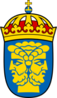

This overview is based on this XML output of the GLAMorous tool d.d. 01-03-2024.
It was generated using the GLAMorousToHTML code.
Also see the documentation of this tool.
This data is also available as an Excel file. More structured data formats (csv, json) will be added in the future.
Available languages
Swedish (1.207)
French (320)
Nynorsk (203)
English (190)
Ukrainian (174)
Hungarian (90)
German (86)
Russian (58)
Finnish (55)
Spanish (49)
Hebrew (41)
Turkish (39)
Portuguese (36)
Romanian (35)
Yoruba (32)
Persian (31)
Korean (28)
Italian (25)
Basque (23)
Galician (22)
Japanese (21)
Danish (20)
Polish (20)
Minnan (19)
Esperanto (18)
Ladin (18)
Lithuanian (18)
Lombard (15)
Vietnamese (15)
Standard Estonian (13)
Arabic (12)
Indonesian (12)
Belarusian (11)
Thai (11)
Chinese (10)
Urdu (10)
Albanian (9)
Eastern Armenian (9)
Malay (9)
Latvian (8)
Slovak (8)
Asturian (7)
Bulgarian (7)
Uzbek (7)
Catalan (6)
Egyptian Arabic (6)
Serbo-Croatian (6)
South Azerbaijani (6)
Czech (5)
Nynorsk (5)
Venetian (5)
West Frisian (5)
Bosnian (4)
Cebuano (4)
Greek (4)
Latin (4)
Macedonian (4)
Occitan (4)
Azerbaijani (3)
Bangla (3)
Bavarian (3)
Cantonese (3)
Dutch (3)
Ido (3)
Serbian (3)
Southern Quechua (3)
Georgian (2)
Kazakh (2)
Kurmanji (2)
Northern Sami (2)
Scots (2)
Slovene (2)
Veps (2)
Welsh (2)
Afrikaans (1)
Chechen (1)
Croatian (1)
Interlingua (1)
Irish (1)
Kabiye (1)
Low Eastern Saxon (1)
Malayalam (1)
Maltese (1)
Punjabi (1)
Scottish Gaelic (1)
Silesian (1)
Sinhala (1)
Sorani (1)
Sundanese (1)
Tajik (1)
Tatar (1)
Volapük (1)
Swedish (1.207)
24_kvadrat |
AB_Svensk_Torvförädling |
AB_Svenska_Smergelskiffabriken |
AB_Turitz_&_Co |
Abraham_Steinholtz |
Agnesberg |
Agnsjödal |
Akterspegel |
Al-Kazimiyyah-moskén |
Alafors |
Alafors,_Kungsbacka_kommun |
Ale_kommun |
Alingsås_kommun |
Allarängen_och_Kärra |
Alvhem |
Ambjörnhagen |
Amphion_(1778) |
Andalen |
Anders_Bure |
Andersön |
Andrées_polarexpedition_1896–1897 |
Angered |
Angered_(tätort) |
Angereds_distrikt |
Angereds_församling |
Anklam |
Anna_Ollson |
Anneberg,_Kungsbacka_kommun |
Annedal,_Göteborg |
Annedals_distrikt |
Apostoliska_prefekturen_i_Sverige |
Araslövs_församling |
Araslövssjön |
Arboga |
Arendal,_Göteborg |
Arkelstorp |
Artorp |
Askersund |
Askesby |
Askim |
Askim_(stadsdelsnämndsområde) |
Askims_distrikt |
Askims_torg |
Asperö |
Asserdal |
Asserlund |
Assmundtorp_och_Skändla |
August_Kobbs_gymnasium |
August_Krüger |
Axel_von_Fersen |
Axtorp |
Backa,_Göteborg |
Backa,_Kungsbacka_kommun |
Backa_(stadsdelsnämndsområde) |
Backa_Folkets_hus |
Backa_distrikt |
Badhuset_vid_Skeppsbron |
Bagaregården |
Baggeryr_och_Gråbo |
Balsberget |
Balsby |
Baltzar_von_Dahlheim |
Barum |
Bassås |
Befästning |
Belägringen_av_Novgorod_1611 |
Berge,_Lockne_distrikt |
Bergegården |
Berghem,_Kungsbacka_kommun |
Bergsjön |
Bergsjön_(stadsdelsnämndsområde) |
Bergsjöns_distrikt |
Bergslagsgatan |
Bergum |
Bergums_distrikt |
Billdal_(tätort) |
Billdals_kyrkogård |
Biskopsgården |
Biskopsgården_(stadsdelsnämndsområde) |
Biskopsgårdens_distrikt |
Bjurslättskyrkan |
Bjärke_församling |
Bjärlöv |
Bjärme,_Östersunds_kommun |
Bjärnhult |
Björkekärrs_distrikt |
Björlanda |
Björlanda_(tätort) |
Björlanda_distrikt |
Björlanda_landskommun |
Björneborgs_läns_infanteriregemente |
Björnlunda |
Björnlunda_distrikt |
Björnlunda_västra |
Björsared |
Björsgård |
Bleka |
Blikstorp |
Blinneberg,_Slittorp_och_Färdsle |
Blistorp |
Blomstertorget |
Boet |
Bohus |
Bolsheden |
Brattås |
Brattås,_Torred_och_Tollesbur |
Bremen_(1705) |
Bringåsen |
Bromölla |
Bromölla_kommun |
Bruket,_Degerfors |
Brunflo |
Brunflo_distrikt |
Brunflo_församling |
Brunnsbo_distrikt |
Brunnstorpsnäs |
Bruntorpsdalen_och_Mulered |
Bräcke,_Göteborg |
Bräckegymnasiet |
Brämaregården |
Brämaregårdens_distrikt |
Brännö |
Bråhögsbadet |
Bröndome |
Buared |
Buerås |
Bullegummans_gata |
Bunkeberget_skatepark |
Burgårdskolonin |
Bye,_Marieby_distrikt |
Bäck,_Kungsbacka_kommun |
Bäckaskog |
Bäckebols_distrikt |
Bärby,_Göteborgs_kommun |
Båberg |
Båstorp |
Bö,_Göteborg |
Bödamissalet |
Bödel |
Böle_och_Fillsta |
Börö-ön |
Börön |
Carl_Fredrik_Coyet |
Carl_Gösta_Ling-Vannerus |
Carl_Hjulhammar |
Carl_Olsen |
Carlos_Adlercreutz |
Casablanca_(film) |
Centrum_(stadsdelsnämndsområde) |
Cherson |
Citadell |
Claës_Günther |
Daga_församling |
Dala,_Älvsåkers_distrikt |
Dalarö_skans |
Dalregementet |
Dalsland |
Degeberga |
Degeberga-Everöds_församling |
Degeberga_distrikt |
Delsjön_(stadsdel) |
Demmin |
Digernäs |
Digernäs_Smultronbacken |
Djupedal |
Djurröd |
Djurröds_distrikt |
Dnepr |
Dockered |
Dombok |
Donsö |
Dotetorp |
Dragoman |
Drottning_Kristina |
Drottningens_livregemente_till_fot |
Drögsperyd |
Dödsstraff_i_Sverige |
E6.20 |
Ede,_Östersunds_kommun |
Edenryd |
Edsäter |
Ekerö_kommun |
Ekestad |
Eksjö |
Elisabeth_Stierncrona |
Enare_träsk |
Enköping |
Envoyé |
Erik_Dahlbergh |
Erik_av_Pommern |
Eriksbo |
Erikslund,_Östersund |
Eskilstuna |
Europamästerskapen_i_friidrott_2006 |
Everöd |
Everöds_distrikt |
Fagervik,_Kungsbacka_kommun |
Falkenberg |
Falköping |
Falsterbo |
Fannbyn,_Östersunds_kommun |
Filipstad |
Filkesjön |
Finland_under_den_svenska_tiden |
Fiskebäck,_Göteborg |
Fixhult |
Fjäl |
Fjälebo |
Fjälkestad |
Fjälkestads_distrikt |
Fjälkinge |
Fjälkinge_distrikt |
Fjäringsgården |
Fjärås-Förlanda_församling |
Fjärås_distrikt |
Fjärås_kyrkby |
Fjärås_station |
Flackarp_och_Österslövshus |
Flygvapenchef |
Fläkt_örn |
Folkärna_socken |
Fors_distrikt,_Västergötland |
Forsbäck |
Fort_Casimir |
Franska_skolan,_Göteborg |
Freden_i_Fontainebleau |
Freden_i_Hamburg |
Freden_i_Roskilde |
Fredrik_Adlercreutz |
Fredrik_Gyllenborg_(1698–1759) |
Fridene_distrikt |
Frihetstiden |
Frillesås |
Frillesås_distrikt |
Frillesås_församling |
Frustuna_distrikt |
Frustuna_församling |
Frölunda_(stadsdelsnämndsområde) |
Frösö_distrikt |
Frösön |
Furuliden |
Furulund,_Karlslund_och_Solhem |
Furulund,_Kungsbacka_kommun |
Furåsen |
Fyrverkare |
Fyrverkeri |
Fältkok |
Färjestaden,_Göteborg |
Färjås |
Färlöv |
Färlövs_distrikt |
Fästningsstad |
Fågelås_församling |
Fåker |
Fårabäck,_Kristianstads_kommun |
Förlanda |
Förlanda_distrikt |
Förlikning_(civilrätt) |
Gabriel_Stierncrona |
Gamlegårds-_och_Hälledalsvägen |
Gamlestaden,_Göteborg |
Garnisonsregementet_i_Göteborg |
Garnisonsregementet_i_Stralsund |
Garnviken |
Garverimuseet |
Gate,_Hjo_kommun |
Genvalla |
Georg_Biurman |
Gibraltar |
Gnesta |
Gnesta_kommun |
Gnosjöandan |
Gottand |
Gottskär |
Granås |
Grebban |
Gressela |
Greta_Garbo |
Grevbäck |
Grevbäcks_distrikt |
Grevehuset |
Gringelstad |
Gripsholms_län |
Groningen |
Grundsjön,_Ryssberget |
Grytan |
Gryts_distrikt,_Södermanland |
Gränna |
Gräppås |
Grödby,_Bromölla_kommun |
Gröna_Vallen,_Göteborg |
Grönnäs |
Grönnäs_västra |
Gualöv |
Gualövs_distrikt |
Gudrun_Jern |
Guldheden |
Guldringen,_Göteborg |
Gullbergsvass |
Gunnared_(stadsdelsnämndsområde) |
Gunnareds_distrikt |
Gunnareds_kyrkogård |
Gunnesby |
Gunnilse |
Gustaf_Hermansson |
Gustaf_Oscar_Wallenberg |
Gustav_Adolfs_distrikt,_Skåne |
Gustav_Adolfs_kyrka,_Helsingborg |
Gustavia,_Rügen |
Gällinge |
Gällinge_distrikt |
Gällinge_församling |
Gärdet,_Kungsbacka_kommun |
Gärdhems_distrikt |
Gärdhems_församling |
Gärds_Köpinge |
Gävle |
Gårda |
Gårdsten |
Gåsinge-Dillnäs_distrikt |
Göfab |
Göinge_Fridhem |
Götalundens_distrikt |
Göteborg |
Göteborgs_Curlinghall |
Göteborgs_Karl_Johans_distrikt |
Göteborgs_Oscar_Fredriks_distrikt |
Göteborgs_S:t_Pauli_församling |
Göteborgs_Sankt_Pauli_distrikt |
Göteborgs_Vasa_distrikt |
Göteborgs_domkyrka |
Göteborgs_domkyrkodistrikt |
Göteborgs_fasta_försvar |
Göteborgs_historia |
Göteborgs_kommun |
Göteborgs_konstskola |
Göteborgs_nation_i_Lund |
Göteborgs_synagoga |
Göteborgskalaset |
Haga,_Göteborg |
Haga,_Östersunds_kommun |
Haga_distrikt,_Västergötland |
Hagapoolen |
Hagryd-Dala |
Hajen_(1904) |
Halla_Heberg |
Hallbacken |
Halleröd |
Halmstad |
Hammar,_Kristianstads_kommun |
Hammarbosäter |
Hammarsjön |
Hammarslund |
Hammersta |
Hampus_Huldt |
Hampus_Kärnman |
Hanau |
Handog |
Hanhals |
Hanhals_distrikt |
Hans_Brask |
Hans_Markvardsson |
Hara,_Östersunds_kommun |
Harry_Söderman |
Hasselbladska_ängen |
Hawker_Hart |
Hedemora |
Heden,_Göteborg |
Heden,_Trollhättans_kommun |
Hedetorpet |
Hegled |
Heinrich_Thome |
Helge_å |
Helgered |
Hemming_Gadh |
Heraldisk_höger_och_vänster |
Hessen_Cassel_(1731) |
Hisingens_boxningsklubb |
Hisingstad |
Historiska_kartor_över_Stockholm |
Hjo |
Hjo_distrikt |
Hjo_församling |
Hjo_kommun |
Hjortmossen |
Hjuvik_(tätort) |
Hjällbo |
Hjälm,_Kungsbacka_kommun |
Hjälmared,_Kungsbacka_kommun |
Hjälmeskulla |
Holjeån |
Holmön_(ort) |
Hommentorp |
Horna |
Horssöcket |
Huaröd |
Huaröds_distrikt |
Huddinge_kommun |
Huddinge_kommunvapen |
Hudiksvall |
Hugo_Raab |
Hulan,_Hjo_kommun |
Hulan,_Trollhättans_kommun |
Hult,_Ale_kommun |
Hults_höjd |
Husås |
Häcklehagen |
Häggenås |
Häggenås-Lit-Kyrkås_församling |
Häggenås_distrikt |
Hällsvik |
Hälsinge_regemente |
Hälsingland |
Härke |
Härke_strand |
Härlanda_(stadsdelsnämndsområde) |
Härlanda_distrikt |
Härnösand |
Härnösands_kommun |
Hästevik |
Hästpojken |
Häxan |
Håfors |
Håkanryd |
Håkulla |
Hålanda_distrikt |
Hålanda_kyrka |
Hållsta,_Gnesta_kommun |
Höga,_Ale_kommun |
Högen,_Älvsborgs_distrikt |
Högsbo |
Högsbo_(stadsdelsnämndsområde) |
Högsbo_distrikt |
Högsboleden |
Högskolan_Väst |
Högstorp,_Ale_kommun |
Högås_och_Sjötorp |
Hönsaryd |
Hörröds_distrikt |
IFK_Uppsala_(bandy) |
Idala,_Kungsbacka_kommun |
Idala_distrikt |
Idala_församling |
Illerim_(1754) |
Immeln |
Ingeborg_Tordsdotter_(Bonde) |
Inom_Vallgraven |
Isön |
Ivar_Olofsson |
Ivetofta-Gualövs_församling |
Ivetofta_distrikt |
Ivö |
Ivö_(småort) |
Ivö_distrikt |
Ivösjön |
Jannelund |
Jarramas_(1759) |
Johan_Larsson_Tresk |
Johan_Nordenfalk |
Johan_Peter_Kirstenius |
Johan_Petter_Holmström |
Johanneberg |
Johannebergs_distrikt |
Jonas_Persson_Gedda |
Julebodaån |
Julita_kloster |
Justitiestatsminister |
Jägerhornska_regementet |
Jämtlands_landskapsvapen |
Järnbrott |
Järvsö_kyrka |
Jönköping |
Jönköpings_län |
Jönköpings_privilegiebrev |
Jönköpings_regemente |
K2020 |
KV_konstskola |
Kaffatorp |
Kalabaliken_i_Bender |
Kallebäck |
Kalmar |
Kalmar_regemente_(gamla) |
Kalmarsund |
Kanada,_Degerfors |
Karl_Amundson |
Karl_IX:s_Göteborg |
Karl_XII |
Karl_XII:s_vistelse_i_Bender |
Karlshamn |
Karlstad |
Karpalund |
Kaspiska_havet |
Kemi_lappmark |
Kemisamiska |
Kiaby |
Kiaby_distrikt |
Kilanda_distrikt |
Kippholmen |
Kjuge |
Kläppa |
Kläppe |
Klösta |
Knipared |
Knut_Svensson_(löjtnant) |
Knytta |
Kollanda |
Kommendantsängen |
Kommunalvalet_i_Gnosjö_2002 |
Kommunalvalet_i_Göteborg_2010 |
Kommunalvalet_i_Göteborg_2014 |
Kommunalvalet_i_Göteborg_2018 |
Kommunalvalet_i_Göteborg_2022 |
Kommunalvalet_i_Pajala_2002 |
Kommunalvalet_i_Skara_2002 |
Kommunalvalet_i_Stockholm_2014 |
Kommunalvalet_i_Stockholm_2018 |
Kommunalvalet_i_Stockholm_2022 |
Kommunvapen_i_Sverige_1952–1970 |
Kongahällavägen |
Konung_Adolf_Fredrik_(1775) |
Konung_Karl_(1694) |
Konungens_eget_värvade_regemente |
Koral |
Koralbok |
Korsberga,_Hjo_kommun |
Korsberga-Fridene_församling |
Korsberga_distrikt,_Västergötland |
Korsgården |
Korsta_och_Prästlägden |
Kortedala |
Kortedala_(stadsdelsnämndsområde) |
Kortedala_distrikt |
Krim |
Krimkriget |
Kristianstad |
Kristianstads_Heliga_Trefaldighets_distrikt |
Kristianstads_Heliga_Trefaldighets_församling |
Kristianstads_kommun |
Kristianstads_stad |
Kristinehamn |
Krokslätt |
Kronobergs_län |
Kronobergs_regemente |
Kronobäck |
Kronologisk_lista_över_Skellefteås_historia |
Krzysztof_Kosiński |
Kullavik |
Kullaviks_församling |
Kungsbacka |
Kungsbacka-Hanhals_församling |
Kungsbacka_distrikt |
Kungsbacka_kommun |
Kungsladugård,_Göteborg |
Kungsporten,_Göteborg |
Kungälv |
Kvegerö |
Kviberg |
Kvillebäcken |
Kvillehed |
Kvisljungeby |
Kyrkbyn,_Göteborg |
Kyrkobyn,_Kungsbacka_kommun |
Kyrkotorp |
Kyrkås_distrikt,_Jämtland |
Källunda |
Källåsberget |
Kärra,_Göteborg |
Kärra-Rödbo_(stadsdelsnämndsområde) |
Kärrdalen |
Kålltorp |
Kålsered |
Köping |
Köpinge_distrikt |
Köpinge_församling |
Köpstadsö |
Lagmansereds_distrikt |
Landa,_Kungsbacka_kommun |
Landa_distrikt,_Halland |
Landa_församling,_Göteborgs_stift |
Landala |
Landsorts_fyr |
Lappland,_Sverige |
Lappmarken |
Larsered |
Laxne |
Lekarekulle |
Leksands_kommun |
Lerbäck,_Göteborgs_kommun |
Lerkil |
Levanten |
Levrasjön |
Lextorps_distrikt |
Liarum |
Lidingö_kommunvapen |
Lidköping |
Lidköpings_kommun |
Lidköpings_rådhus |
Lidängen |
Lilla_Billingen |
Lilleby |
Lillehem |
Linderöd |
Linderöds_distrikt |
Linderödsåsen |
Lindesberg |
Lindholmen,_Göteborg |
Lindveden |
Linköping |
Linnarhultsbron |
Linnéstaden_(stadsdelsnämndsområde) |
Lista_över_händelser_under_stora_nordiska_kriget |
Lista_över_mottagare_av_Serafimerorden |
Lit_(tätort) |
Litauens_historia |
Lits_distrikt |
Lockne_(småort) |
Lockne_distrikt |
Loke,_Östersunds_kommun |
Lorensberg |
Lucia |
Luleå |
Lund |
Lundby_(stadsdelsnämndsområde) |
Lundby_distrikt,_Västergötland |
Lundbyvassen |
Lunden,_Göteborg |
Lungre |
Lunna,_Kungsbacka_kommun |
Lunnaberg |
Lunne,_Östersunds_kommun |
Lycksele_lappmark |
Lyngby,_Kristianstads_kommun |
Lyngsjö_distrikt |
Lyngsjö_kyrkby |
Lyngås |
Lysekils_kommun |
Läckö_slott |
Lärjedalen_(stadsdelsnämndsområde) |
Låssby |
Lödöse |
Löfsåsen |
Maglehem |
Maglehems_distrikt |
Magnus_Stenbock |
Majorna |
Majorna_(stadsdelsnämndsområde) |
Malmköping |
Malmsjöstugan |
Malmö |
Malmö_kommun |
Malmö_kommunvapen |
Mariakyrkan,_Göteborg |
Marieby |
Marieby_distrikt |
Mariefred |
Mariestad |
Marstrand |
Masthugget |
Masthuggets_distrikt |
Medelpads_Fotbollförbund |
Meijenkrebsskansen |
Mellersta_civilområdet |
Merci_Poesi |
Missale |
Mjönäs,_Kristianstads_kommun |
Mo,_Östersunds_kommun |
Mofalla |
Mofalla_distrikt |
Mofalla_församling |
Mora_kommun |
Munkflohögen |
Myntsedlar |
Mysterna |
Målsta |
Namnet_Stockholm |
Narva |
Nasafjälls_silververk |
Nationalmuseum_(byggnad) |
Naven |
Neva |
Nicolaus_V |
Nils_Gustafsson_(Rossviksätten) |
Nissafors |
Nogesund |
Nol |
Nolvik |
Nolviks_kile |
Nora |
Norby_och_Torås |
Nordamerikas_ursprungsbefolkning |
Norderåsen |
Norderö_distrikt |
Norderön |
Nordstaden |
Nordstjernan_(1703) |
Nordöstra_Göteborg |
Norra_Björke |
Norra_Björke_distrikt |
Norra_Fågelås_distrikt |
Norra_Kalltorpssjön |
Norra_Strö_distrikt |
Norra_civilområdet |
Norra_Åsum |
Norra_Åsums_distrikt |
Norra_Åsums_församling |
Norra_Österslöv |
Norrbottens_landskapsvapen |
Norrbottens_län |
Norreskog |
Norrköping |
Norrköpings_stadsvapen |
Norrtuna,_Gnesta_kommun |
Norrtälje |
Nosaby_distrikt |
Nosaby_församling |
Nya_Lödöse |
Nya_Sverige |
Nya_Varvet |
Nya_Älvsborg |
Nyby,_Östersunds_kommun |
Nyehusen |
Nygård,_Kungsbacka_kommun |
Nylands_infanteriregemente |
Nylöse_distrikt |
Nymö |
Nymö_distrikt |
Nymölla |
Närke |
Närke-Värmlands_regemente |
Näs,_Östersunds_kommun |
Näs_distrikt,_Jämtland |
Näset,_Göteborg |
Näsets_distrikt |
Näsum |
Näsums_distrikt |
Näsums_församling |
Nävlingeåsen |
Nödinge |
Nödinge-Nol |
Nödinge_distrikt |
Nödinge_församling |
Nödinge_kyrka |
Ockelbo_kommunvapen |
Odersbäck |
Oktoberrevolutionen |
Olivedal |
Olofstorp |
Olseröd |
Olskroken |
Onsala |
Onsala_distrikt |
Onsala_församling |
Ope |
Oppmanna |
Oppmanna-Vånga_församling |
Oppmanna_distrikt |
Oppmannasjön |
Optand |
Orrviken |
Oscar_Fredriks_kyrka |
Otto_Kjellström |
Ovesholm |
Pansarkryssaren_Potemkin |
Partihandelstorget |
Pedher_Lindheström |
Pedro_Ahlmark |
Per_Nilsson_(Yngsjömördaren) |
Peter_Möller_(kapten) |
Piteå |
Pojama |
Polistrupperna |
Posta-Johans_väg |
Preussen |
Prosten_Silvius_stiftelse |
Prästegården |
Pustervik |
Pär_Rådström |
Rambergsstaden |
Ramlösa_hälsobrunn |
Ramstorp |
Rannebergen_Centrum |
Raoul_Wallenberg |
Raslången |
Rederiaktiebolaget_Banco |
Regalskeppet_Kronan_(1668) |
Renmärke |
Ribnitz-Damgarten |
Rickarum |
Rikardis_av_Schwerin |
Riksarkivet_(Sverige) |
Riksänkedrottningens_livregemente_till_häst |
Ringsta |
Rinkaby,_Kristianstads_kommun |
Rinkaby_distrikt,_Skåne |
Ripa_(ort) |
Rise,_Östersunds_kommun |
Robertsfors_kommun |
Rommele_distrikt |
Rosenberg_och_Åkerström |
Rossbol |
Rossbolbodarna |
Rud,_Göteborg |
Rudolf_Kjellén |
Runstav |
Ruth_Gustafson |
Rya_Nabbe |
Ryd,_Ale_kommun |
Rydet,_Kungsbacka_kommun |
Rygga |
Ryksdamm |
Ryssberget |
Rysshärjningarna |
Råbelöv |
Råbelövssjön |
Råby,_Bromölla_kommun |
Rådmansö |
Rågården |
Råhagen |
Röda_holme |
Rödbo |
Rödbo_(tätort) |
Rödbo_distrikt |
Rödjan,_Göteborg |
Rördalsvägen |
Rörvik,_Kungsbacka_kommun |
Rösan |
Rösbo |
Sala |
Samuel_Fahlberg |
Samuel_Owen |
Sandarna |
Sandåker |
Sandöbron |
Sankt_Olai_kyrka |
Sankt_Pauli_kyrka,_Göteborg |
Sankt_Petersburg |
Sankta_Klara_kloster |
Sannegården |
Sannum |
Sannå-Dala |
Savolax_lätta_infanteriregemente |
Schougska_handelsgården |
Schweizerdalen,_Kungsbacka_kommun |
Serafimsorden |
Sigrid_Rudebecks_gymnasium |
Sillvik |
Simrishamn |
Singsjön,_Östersunds_kommun |
Sintorp |
Sjunnarp |
Sjuntorp |
Sjöbo,_Kungsbacka_kommun |
Sjölanda |
Sjör |
Sjöslaget_vid_Korpoström |
Skansen_Lejonet |
Skansholmen,_Storsjön |
Skanör |
Skara |
Skaraborgs_län |
Skaraborgs_regemente_(infanteri) |
Skattegården |
Skeddalen |
Skellefteå |
Skepparslöv |
Skepparslövs_distrikt |
Skepplanda |
Skepplanda-Hålanda_församling |
Skepplanda_distrikt |
Skickja |
Skiftekärr_och_Stockamad |
Skinngruppen |
Skoglösa |
Skogome |
Skute |
Skyddsbrevet_för_Fogdö_kloster_1252 |
Skyttens |
Skändla |
Skänninge |
Skålvisered |
Skåne |
Skånes_historia |
Skånes_landskapsvapen |
Skår,_Ale_kommun |
Skår,_Göteborg |
Skår,_Kungsbacka_kommun |
Skår_södra |
Skönningared |
Slaget_vid_Frisches_Haff |
Slaget_vid_Gadebusch |
Slaget_vid_Pułtusk |
Slaget_vid_Stäket |
Slandrom |
Slottsskogen |
Släp,_Kungsbacka_kommun |
Släps_distrikt |
Släps_församling |
Slätten,_Kungsbacka_kommun |
Smyrnakyrkan_i_Göteborg |
Småkulla,_Kungsbacka_kommun |
Smålands_landskapsvapen |
Snoggetorp |
Solberg,_Sörviken_och_Vålbacken |
Sollentuna_kommunvapen |
Solna_kommunvapen |
Solvikingarna |
Solvädersbyn |
Sonarp |
Sophie_Elkans_gata |
Spenska_regementet |
Spjällen |
Staborg |
Stadsdelar_i_Göteborgs_kommun |
Stadsplanering_i_Sverige |
Stallakärr |
Stampen |
Starrkärr |
Starrkärr-Kilanda_församling |
Starrkärrs_distrikt |
Statens_biografbyrå |
Sten_Sture_den_äldre |
Stenared |
Stig_Wennerström |
Stigberget,_Göteborg |
Stjärnhov |
Stockholm_(1856) |
Stockholms_historia |
Stola_herrgård |
Stommen,_Ale_kommun |
Stora_Förö |
Stora_Svindal |
Stora_Valla_(stadsdel) |
Strängnäs |
Strömstad |
Strömsunds_kommunvapen |
Strömtorp |
Studentliv_i_Uppsala |
Stuv,_Kungsbacka_kommun |
Styrbjörn_(1790) |
Styrskulle |
Styrsö |
Styrsö_distrikt |
Sundstorp |
Sundsvall |
Sundsvalls_kommun |
Sunne_distrikt,_Jämtland |
Super_8,_Liseberg |
Surte |
Svappavaara |
Svea_livgarde |
Sven_Hedin |
Svensk-ryska_gradmätningsexpeditionen_till_Spetsbergen_1899–1902 |
Svenska_Grönlandsexpeditionen_1883 |
Svenska_Pommern |
Svenska_Sankt_Barthélemy |
Svenska_frivilligflottiljen_i_Finland |
Svenskt_Diplomatarium |
Svenstorp,_Ale_kommun |
Sverige_under_första_världskriget |
Sveriges_Lucia |
Sveriges_bästa_idrottsstad |
Sveriges_historia |
Sveriges_örlogsflagga |
Sydöstra_civilområdet |
Syrhåla |
Sännsjölandet_och_Lillsjöhögen |
Särö |
Säter |
Sätinge |
Säve |
Säve_(tätort) |
Säve_distrikt |
Säve_gård |
Sävenäs |
Sålanda_och_Ryk |
Södergården,_Källekärr_och_Bäcken |
Söderhamn |
Söderköping |
Södermanland |
Södermanlands_regemente_(infanteri) |
Södertälje |
Södra_Bug |
Södra_Fågelås_distrikt |
Södra_Skärgården_(stadsdelsnämndsområde) |
Södra_Söre |
Södra_civilområdet |
Sölvesborg |
Sölvesborgs_kommun |
Sönnerbergen |
Sör-Ölanda |
Sörensens_gata |
Sörred |
TV-pucken |
Tand |
Tandsbyn |
Tartu_universitet |
Tasseboda |
Tavastehus_läns_infanteriregemente |
Tings_Nöbbelöv |
Tingstadsvassen |
Tinktur_(heraldik) |
Tolered |
Tollarp |
Tomtebacken_och_Gullö |
Torkelstorp |
Tornehamns_kyrkogård |
Torp,_Ale_kommun |
Torp_(stadsdel) |
Torpa-Dala |
Torsebro |
Torshälla |
Torslanda,_Göteborg |
Torslanda_(stadsdelsnämndsområde) |
Torslanda_(tätort) |
Torslanda_distrikt |
Torvalla_by |
Torvhög |
Tosteberga |
Tramsta |
Treberg |
Trolle-Ljungby_distrikt |
Trollhättan |
Trollhättans_Basketbollklubb |
Trollhättans_distrikt |
Trollhättans_församling |
Trollhättans_kommun |
Trollhättans_stad |
Trollhätte_kanal |
Trosa |
Trulsegården |
Tryckfrihetsförordningen |
Träne |
Träne-Djurröds_församling |
Träne_distrikt |
Tråkärrslätt |
Trånget |
Tumlehed |
Tuve |
Tuve-Säve_(stadsdelsnämndsområde) |
Tuve_distrikt |
Tvärminne |
Tynnered |
Tynnered_(stadsdelsnämndsområde) |
Tynnereds_distrikt |
Tyresö_kommun |
Tåget_över_Bält |
Tölö_distrikt |
Tölö_församling |
Uddevalla |
Udema |
Ukraina |
Uleåborgs_län |
Ullstorp |
Ulricehamn |
Umeå |
Uniform_m/1765 |
Unik_BK |
Upphärad |
Upphärads_distrikt |
Upplands_regemente_(infanteri) |
Upplands_runinskrifter_1097 |
Uppsala |
Utby |
Vadstena |
Vadstena_kloster |
Valfisken_(befästning) |
Valje |
Valla,_Östersund |
Vallda |
Vallda_distrikt |
Vallda_församling |
Vallersvik |
Valne,_Östersunds_kommun |
Valter_Fevrell |
Vanneberga |
Varberg |
Vasastaden,_Göteborg |
Vassbäck |
Vattentortyr |
Vaxholm |
Veberöds_nya_tegelbruk |
Velanda |
Venestad |
Verkön |
Verle |
Viby,_Kristianstads_kommun |
Vickan,_Kungsbacka_kommun |
Victoria_Benedictsson |
Viken,_Kungsbacka_kommun |
Viken,_Östersunds_kommun |
Vikingatidens_skepp |
Vilhelmina_kommun |
Villa_Giacomina |
Vimmerby |
Vinnö |
Vinterkriget |
Vipekärr |
Visby |
Vittra_Vasastan |
Vittskövle,_Kristianstads_kommun |
Vittskövle_distrikt |
Voxlöv |
Vramsån |
Vrångö |
Vä |
Vä-Skepparslövs_församling |
Vä_distrikt |
Välås |
Väne-Åsaka |
Väne-Åsaka_distrikt |
Vänersborg |
Vännäs_kommun |
Världsmästerskapen_i_bordtennis_1985 |
Världsmästerskapen_i_bordtennis_1993 |
Vässingsö |
Västanå,_Bromölla_kommun |
Västerbottens_län |
Västerbottens_regemente |
Västerås |
Västgöta-Dals_regemente |
Västmanlands_regemente_(gamla) |
Västra_Bokö |
Västra_Frölunda_distrikt |
Västra_Frölunda_landskommun |
Västra_Götalands_län |
Västra_Hagen |
Västra_Hanhals |
Västra_Låssby |
Västra_Vrams_distrikt |
Västra_civilområdet |
Vånga,_Kristianstads_kommun |
Vånga_distrikt,_Skåne |
Vårdkase |
Vårfruberga_kloster |
Wasa_(linjeskepp) |
Wilhelm_Kruse |
Yngsjö |
Yngsjömordet |
Yngsjöstrand |
Ysbyhult |
Ytterstad |
Älvsborg_(stadsdel) |
Älvsborg_(stadsdelsnämndsområde) |
Älvsborgs_distrikt |
Älvsborgs_län |
Älvsborgs_regemente |
Älvsborgs_stad |
Älvsåker |
Älvsåkers_distrikt |
Älvsåkers_församling |
Älvängen |
Änggården |
Ängsmon |
Änkedrottningens_livregemente |
Ärkebiskopsborgen |
Äspered,_Göteborgs_kommun |
Äsphults_distrikt |
Åbo_läns_infanteriregemente |
Åhus |
Åhus_distrikt |
Åhus_församling |
Åhuskärr |
Ångsta |
Årekärr |
Åsa,_Kungsbacka_kommun |
Åsaka-Björke_församling |
Åsön |
Öjersbo |
Ölhallen_Weise |
Öllsjö |
Ölmanäs |
Ölmevalla_distrikt |
Ölmevalla_församling |
Önnered |
Önnestad |
Önnestads_backar |
Önnestads_distrikt |
Örebro_försvarsområde |
Örebro_kommun |
Örebro_kommunvapen |
Örebro_län |
Örgryte_(stadsdelsnämndsområde) |
Örgryte_distrikt |
Östad,_Bromölla_kommun |
Österbottens_infanteriregemente |
Österbyn |
Österslöv |
Österslövs_distrikt |
Östersund |
Östersunds_distrikt |
Östersunds_församling |
Östersunds_kommun |
Östersunds_kommunvapen |
Östervång |
Östervång_södra |
Österåsen,_Östersunds_kommun |
Östgöta_infanteriregemente |
Östhammars_kommun |
Östra_Hanhals_och_Torkelstorp |
Östra_Sönnarslöv |
Östra_Sönnarslövs_distrikt |
Östra_Vram |
Östra_Vrams_distrikt |
Östra_civilområdet |
Östra_sandar |
Övarp |
Överkalix_landskommun
French (320)
100_mètres_féminin_aux_championnats_du_monde_d'athlétisme_1995 |
100_mètres_haies_aux_championnats_du_monde_d'athlétisme_1995 |
100_mètres_masculin_aux_championnats_du_monde_d'athlétisme_1995 |
10_000_mètres_féminin_aux_championnats_du_monde_d'athlétisme_1995 |
10_000_mètres_masculin_aux_championnats_du_monde_d'athlétisme_1995 |
10_kilomètres_marche_féminin_aux_championnats_du_monde_d'athlétisme_1995 |
110_mètres_haies_aux_championnats_du_monde_d'athlétisme_1995 |
1_500_mètres_féminin_aux_championnats_du_monde_d'athlétisme_1995 |
1_500_mètres_masculin_aux_championnats_du_monde_d'athlétisme_1995 |
200_mètres_féminin_aux_championnats_du_monde_d'athlétisme_1995 |
200_mètres_masculin_aux_championnats_du_monde_d'athlétisme_1995 |
20_kilomètres_marche_masculin_aux_championnats_du_monde_d'athlétisme_1995 |
3_000_mètres_steeple_masculin_aux_championnats_du_monde_d'athlétisme_1995 |
400_mètres_féminin_aux_championnats_du_monde_d'athlétisme_1995 |
400_mètres_haies_féminin_aux_championnats_du_monde_d'athlétisme_1995 |
400_mètres_haies_masculin_aux_championnats_du_monde_d'athlétisme_1995 |
400_mètres_masculin_aux_championnats_du_monde_d'athlétisme_1995 |
50_kilomètres_marche_aux_championnats_du_monde_d'athlétisme_1995 |
5_000_mètres_féminin_aux_championnats_du_monde_d'athlétisme_1995 |
5_000_mètres_masculin_aux_championnats_du_monde_d'athlétisme_1995 |
800_mètres_féminin_aux_championnats_du_monde_d'athlétisme_1995 |
800_mètres_masculin_aux_championnats_du_monde_d'athlétisme_1995 |
Abba_Seafood |
Ace_of_Base |
All_Ends |
Andalen |
Angered |
Archipel_de_Göteborg |
Armorial_des_villes_européennes |
Askim_(paroisse) |
Asperö |
At_the_Gates |
AtmosFear_(Liseberg) |
Avatar_(groupe) |
Axel_Pehrsson-Bramstorp |
Aéroport_de_Göteborg-City |
Aéroport_de_Göteborg-Landvetter |
BK_Häcken |
BK_Häcken_(féminines) |
Balder_(Liseberg) |
Bataille_d'Oliwa |
Bataille_de_Gadebusch |
Bataille_de_Neuwarp |
Billdal |
Björlanda |
Blekinge |
Bravida_Arena |
Brännö |
Carl_Bildt |
Cathédrale_de_Göteborg |
Championnat_du_monde_de_floorball_2014 |
Championnat_du_monde_de_hockey_sur_glace_1981 |
Championnats_d'Europe_d'athlétisme_2006 |
Championnats_d'Europe_d'athlétisme_en_salle_1974 |
Championnats_d'Europe_d'athlétisme_en_salle_1984 |
Championnats_d'Europe_d'athlétisme_en_salle_2013 |
Championnats_d'Europe_de_boxe_amateur_1991 |
Championnats_d'Europe_de_dressage_et_de_saut_d'obstacles_2017 |
Championnats_d'Europe_de_gymnastique_artistique_féminine_1983 |
Championnats_d'Europe_de_gymnastique_rythmique_1990 |
Championnats_d'Europe_de_judo_1971 |
Championnats_d'Europe_de_karaté_1982 |
Championnats_d'Europe_de_patinage_artistique_1972 |
Championnats_d'Europe_de_patinage_artistique_1980 |
Championnats_d'Europe_de_patinage_artistique_1985 |
Championnats_d'Europe_de_tennis_de_table_1990 |
Championnats_d'Europe_espoirs_d'athlétisme_1999 |
Championnats_du_monde_d'athlétisme_1995 |
Championnats_du_monde_d'escrime_1973 |
Championnats_du_monde_de_natation_en_petit_bassin_1997 |
Championnats_du_monde_de_patinage_artistique_1976 |
Championnats_du_monde_de_patinage_artistique_2008 |
Championnats_du_monde_de_patinage_de_vitesse_sur_piste_courte_2004 |
Championnats_du_monde_de_pentathlon_moderne_1983 |
Championnats_du_monde_de_tennis_de_table_1985 |
Championnats_du_monde_de_tennis_de_table_1993 |
Chancelier_de_justice_(Suède) |
Château_de_Miolans |
Citadelle_de_la_sainte_Trinité |
Compagnie_suédoise_des_Indes_orientales |
Comté_de_Göteborg_et_Bohus |
Concours_Eurovision_de_la_chanson_1985 |
Conseil_européen_des_15_et_16_juin_2001 |
Constitution_de_Pylyp_Orlyk |
Constitution_de_la_Suède |
Dalie |
Dalécarlie |
Dark_Tranquillity |
Deals_Death |
Despite |
Dimension_Zero |
Diocèse_de_Göteborg |
Districts_de_Göteborg |
Donsö |
Dragonland |
Draken_(Göteborg) |
Dream_Evil_(groupe) |
Décathlon_aux_championnats_du_monde_d'athlétisme_1995 |
El_Perro_del_Mar |
Elyseum |
Engel_(groupe) |
Eskil_Erlandsson |
Espoo |
Evergrey |
Famille_d'acrobates |
Festival_international_du_film_de_Göteborg |
Finale_de_la_Coupe_UEFA_1981-1982 |
Finale_de_la_Coupe_UEFA_1986-1987 |
Finale_de_la_Coupe_UEFA_2003-2004 |
Finale_de_la_Coupe_d'Europe_des_vainqueurs_de_coupe_1982-1983 |
Finale_de_la_Coupe_d'Europe_des_vainqueurs_de_coupe_1989-1990 |
Finale_de_la_Ligue_des_champions_féminine_de_l'UEFA_2020-2021 |
Finale_du_Championnat_d'Europe_de_football_1992 |
Flux_des_métaux_précieux_aux_XVIe_et_XVIIe_siècles |
Fort_de_Nya_Elfsborg |
Forteresse_de_Saint-Sébastien_(Mozambique) |
Fortin_à_la_couronne |
Frölunda_HC |
Frölunda_Torg |
Frölundaborg |
GAIS |
Gamla_Ullevi |
Gothia_Cup |
Grand_Göteborg |
Grimmen |
Guerre_russo-suédoise_de_1741-1743 |
Guillaume_Levasseur_de_Beauplan |
Gästrikland |
Gårda_BK |
Göta_älv |
Götaplatsen |
Götaverken |
Göteborg |
Göteborg_(commune) |
Göteborgs-Posten |
Göteborgs_BK |
Göteborgs_Handels-_och_Sjöfartstidning |
Göteborgs_IF |
Göteborgs_IK |
Göteborgs_Konsthall |
HMS_Hajen_(1904) |
Haga_(Göteborg) |
Halland |
HammerFall |
Hardcore_Superstar |
Heptathlon_aux_championnats_du_monde_d'athlétisme_1995 |
Hip,_Hip,_Hurrah! |
Hisingen |
Histoire_de_la_Suède |
Histoire_du_Cap-Vert |
Hjuvik |
Hälsingland |
IFK_Göteborg |
IFK_Göteborg_(homonymie) |
In_Flames |
Incendie_d'une_discothèque_à_Göteborg_en_1998 |
Jardin_botanique_de_Göteborg |
Jenny_Berggren |
Jeux_mondiaux_féminins_de_1926 |
Jämtland |
KFUM_Göteborg |
Kajaani |
Kaliningrad |
Kanonen |
Kerava |
Kokkola |
Kortedala |
Kost_Hordienko |
Kuhmo |
Kungsportsavenyn |
Kungsportsplatsen |
Kvisljungeby |
Köpstadsö |
Lancer_du_disque_féminin_aux_championnats_du_monde_d'athlétisme_1995 |
Lancer_du_disque_masculin_aux_championnats_du_monde_d'athlétisme_1995 |
Lancer_du_javelot_féminin_aux_championnats_du_monde_d'athlétisme_1995 |
Lancer_du_javelot_masculin_aux_championnats_du_monde_d'athlétisme_1995 |
Lancer_du_marteau_masculin_aux_championnats_du_monde_d'athlétisme_1995 |
Lancer_du_poids_féminin_aux_championnats_du_monde_d'athlétisme_1995 |
Lancer_du_poids_masculin_aux_championnats_du_monde_d'athlétisme_1995 |
Lillasyster |
Liseberg |
Liseberg_Oceana |
Lisebergbanan |
Liste_des_chansons_enregistrées_par_Ace_of_Base |
Liste_des_dirigeants_actuels_des_comtés_suédois |
Liste_des_paroisses_de_Göteborg |
Liste_des_partis_politiques_en_Suède |
Lorensbergsteatern |
Låssby |
Majorna |
Marathon_féminin_aux_championnats_du_monde_d'athlétisme_1995 |
Marathon_masculin_aux_championnats_du_monde_d'athlétisme_1995 |
Maritiman |
Masthugget |
Medelpad |
Metaltown_Festival |
Meurtre_de_Keillers_park |
Miss_Bosnie-Herzégovine |
Mons |
Mont-de-Marsan |
Musée_Röhss |
Musée_Volvo |
Musée_d'histoire_naturelle_de_Göteborg |
Musée_de_la_culture_mondiale |
Musée_de_la_radio_de_Göteborg |
Musée_des_Beaux-Arts_de_Göteborg |
Musée_du_sport_de_Göteborg |
Musée_maritime_de_Göteborg |
Musée_municipal_de_Göteborg |
Musée_nordique_de_l'aquarelle |
Mysterna |
Niclas_Sahlgren |
Nolvik |
Närke |
Ola_Ullsten |
Olof_Palme |
Olofstorp |
Opéra_de_Göteborg |
Orchestre_symphonique_de_Göteborg |
Paletten |
Parti_communiste_(Suède) |
Per_Albin_Hansson |
Polestar |
Politique_en_Suède |
Pont_d'Älvsborg |
Porvoo |
Premier_ministre_de_Suède |
Prise_d'otages_au_consulat_de_Yougoslavie_à_Göteborg |
Qviding_FIF |
Rambergsvallen |
Redbergslids_IK |
Relais_4_×_100_mètres_féminin_aux_championnats_du_monde_d'athlétisme_1995 |
Relais_4_×_100_mètres_masculin_aux_championnats_du_monde_d'athlétisme_1995 |
Relais_4_×_400_mètres_féminin_aux_championnats_du_monde_d'athlétisme_1995 |
Relais_4_×_400_mètres_masculin_aux_championnats_du_monde_d'athlétisme_1995 |
Riksdag_(Suède) |
Résultats_détaillés_des_championnats_d'Europe_d'athlétisme_2006 |
Résultats_détaillés_des_championnats_du_monde_d'athlétisme_1995 |
Röda_Sten |
Rödbo |
SKF |
Saarijärvi |
Saint-Pétersbourg |
Salon_du_livre_de_Göteborg |
Saut_en_hauteur_féminin_aux_championnats_du_monde_d'athlétisme_1995 |
Saut_en_hauteur_masculin_aux_championnats_du_monde_d'athlétisme_1995 |
Saut_en_longueur_féminin_aux_championnats_du_monde_d'athlétisme_1995 |
Saut_en_longueur_masculin_aux_championnats_du_monde_d'athlétisme_1995 |
Saut_à_la_perche_masculin_aux_championnats_du_monde_d'athlétisme_1995 |
Savigny-le-Temple |
Scandinavium |
Scripteur_(catholicisme) |
Sister_Sin_(groupe) |
Siège_de_Montmélian_(1600) |
Skanskaskrapan |
Skellefteå |
Slottsskogen |
Småland |
Sollefteå_(commune) |
Styr_&_ställ |
Styrsö |
Supplice_de_la_goutte_d'eau |
Synagogue_de_Göteborg |
Säve |
Södermanland |
Tableau_des_médailles_des_Championnats_d'Europe_d'athlétisme_2006 |
Tage_Erlander |
Tallinn |
The_Haunted |
The_Knife |
Thiessow |
Thorbjörn_Fälldin |
Théâtre_municipal_de_Göteborg |
Timrå_(commune) |
Torslanda |
Torslanda_IK |
Tournoi_de_go_de_Göteborg |
Tournoi_de_tennis_de_Göteborg |
Traité_de_Hambourg_(1762) |
Tramway_de_Göteborg |
Tranås_(commune) |
Triple_saut_féminin_aux_championnats_du_monde_d'athlétisme_1995 |
Triple_saut_masculin_aux_championnats_du_monde_d'athlétisme_1995 |
Trädgårdsföreningen |
Tumlehed |
Turku |
Ulf_Kristersson |
Ullevi |
Union_Carbide_Productions |
Universeum |
Université_de_Göteborg |
Uppland |
Vaasa |
Vantaa |
Vargö |
Varna_(Bulgarie) |
Viking_(voilier) |
Volvo |
Volvo_Cars |
Volvo_Trucks |
Vrångö |
Västergötland |
Västmanland |
Västra_Frölunda_IF |
Västtrafik |
West_Coast_Riot |
Wintergatan |
Zoink |
Åby_Stora_Pris |
Ångermanland |
École_polytechnique_Chalmers |
Église_Oscar_Fredrik |
Élections_en_Suède |
Équipe_d'Angleterre_de_football_à_la_Coupe_du_monde_1958 |
Équipe_des_Pays-Bas_de_football_au_Championnat_d'Europe_1992 |
Öland |
Örgryte |
Örgryte_IS |
Östergötland
Nynorsk (203)
Ale_kommune |
Alingsås_kommune |
Baltzar_von_Dahlheim |
Blekinge_län |
Callao |
Claës_Günther |
Dalarnas_län |
Framtidskommissionen |
Freden_i_Åbo |
Gotlands_län |
Gävleborgs_län |
Göteborg |
Göteborg_kommune |
Hallands_län |
Hjo_kommune |
Huddinge_kommune |
Härnösand_kommune |
ISO_3166-2:SE |
Justisdepartementet_(Sverige) |
Justitiestatsminister |
Jämtlands_län |
Jönköpings_län |
Kalmar_län |
Karlskoga |
Karlskoga_kommune |
Kemi_lappmark |
Kristianstad_kommune |
Kronobergs_län |
Kungsbacka_kommune |
Leksand_kommune |
Lidköping_kommune |
Liste_over_landshøvdinger_i_Gotlands_län |
Liste_over_landshøvdinger_i_Norrbottens_län |
Liste_over_landshøvdinger_i_Västerbottens_län |
Liste_over_landshøvdinger_i_Västernorrlands_län |
Liste_over_landshøvdinger_i_Västmanlands_län |
Liste_over_landshøvdinger_i_Västra_Götalands_län |
Liste_over_landshøvdinger_i_Örebro_län |
Liste_over_landshøvdinger_i_Östergötlands_län |
Liste_over_statsledere_i_1253 |
Liste_over_statsledere_i_1254 |
Liste_over_statsledere_i_1255 |
Liste_over_statsledere_i_1256 |
Liste_over_statsledere_i_1257 |
Liste_over_statsledere_i_1258 |
Liste_over_statsledere_i_1259 |
Liste_over_statsledere_i_1260 |
Liste_over_statsledere_i_1261 |
Liste_over_statsledere_i_1262 |
Liste_over_statsledere_i_1263 |
Liste_over_statsledere_i_1264 |
Liste_over_statsledere_i_1265 |
Liste_over_statsledere_i_1266 |
Liste_over_statsledere_i_1267 |
Liste_over_statsledere_i_1268 |
Liste_over_statsledere_i_1269 |
Liste_over_statsledere_i_1270 |
Liste_over_statsledere_i_1271 |
Liste_over_statsledere_i_1272 |
Liste_over_statsledere_i_1273 |
Liste_over_statsledere_i_1274 |
Liste_over_statsledere_i_1275 |
Liste_over_statsledere_i_1276 |
Liste_over_statsledere_i_1277 |
Liste_over_statsledere_i_1278 |
Liste_over_statsledere_i_1279 |
Liste_over_statsledere_i_1280 |
Liste_over_statsledere_i_1281 |
Liste_over_statsledere_i_1282 |
Liste_over_statsledere_i_1283 |
Liste_over_statsledere_i_1284 |
Liste_over_statsledere_i_1285 |
Liste_over_statsledere_i_1286 |
Liste_over_statsledere_i_1287 |
Liste_over_statsledere_i_1288 |
Liste_over_statsledere_i_1289 |
Liste_over_statsledere_i_1290 |
Liste_over_statsledere_i_1291 |
Liste_over_statsledere_i_1292 |
Liste_over_statsledere_i_1293 |
Liste_over_statsledere_i_1294 |
Liste_over_statsledere_i_1295 |
Liste_over_statsledere_i_1296 |
Liste_over_statsledere_i_1297 |
Liste_over_statsledere_i_1298 |
Liste_over_statsledere_i_1299 |
Liste_over_statsledere_i_1300 |
Liste_over_statsledere_i_1301 |
Liste_over_statsledere_i_1302 |
Liste_over_statsledere_i_1303 |
Liste_over_statsledere_i_1304 |
Liste_over_statsledere_i_1305 |
Liste_over_statsledere_i_1306 |
Liste_over_statsledere_i_1307 |
Liste_over_statsledere_i_1308 |
Liste_over_statsledere_i_1309 |
Liste_over_statsledere_i_1310 |
Liste_over_statsledere_i_1311 |
Liste_over_statsledere_i_1312 |
Liste_over_statsledere_i_1313 |
Liste_over_statsledere_i_1314 |
Liste_over_statsledere_i_1315 |
Liste_over_statsledere_i_1316 |
Liste_over_statsledere_i_1317 |
Liste_over_statsledere_i_1318 |
Liste_over_statsledere_i_1319 |
Liste_over_statsledere_i_1320 |
Liste_over_statsledere_i_1321 |
Liste_over_statsledere_i_1322 |
Liste_over_statsledere_i_1323 |
Liste_over_statsledere_i_1324 |
Liste_over_statsledere_i_1325 |
Liste_over_statsledere_i_1326 |
Liste_over_statsledere_i_1327 |
Liste_over_statsledere_i_1328 |
Liste_over_statsledere_i_1329 |
Liste_over_statsledere_i_1330 |
Liste_over_statsledere_i_1331 |
Liste_over_statsledere_i_1332 |
Liste_over_statsledere_i_1333 |
Liste_over_statsledere_i_1334 |
Liste_over_statsledere_i_1335 |
Liste_over_statsledere_i_1336 |
Liste_over_statsledere_i_1337 |
Liste_over_statsledere_i_1338 |
Liste_over_statsledere_i_1339 |
Liste_over_statsledere_i_1340 |
Liste_over_statsledere_i_1341 |
Liste_over_statsledere_i_1342 |
Liste_over_statsledere_i_1343 |
Liste_over_statsledere_i_1344 |
Liste_over_statsledere_i_1345 |
Liste_over_statsledere_i_1346 |
Liste_over_statsledere_i_1347 |
Liste_over_statsledere_i_1348 |
Liste_over_statsledere_i_1349 |
Liste_over_statsledere_i_1350 |
Liste_over_statsledere_i_1351 |
Liste_over_statsledere_i_1352 |
Liste_over_statsledere_i_1353 |
Liste_over_statsledere_i_1354 |
Liste_over_statsledere_i_1355 |
Liste_over_statsledere_i_1356 |
Liste_over_statsledere_i_1357 |
Liste_over_statsledere_i_1358 |
Liste_over_statsledere_i_1359 |
Liste_over_statsledere_i_1360 |
Liste_over_statsledere_i_1361 |
Liste_over_statsledere_i_1362 |
Liste_over_statsledere_i_1363 |
Liste_over_statsledere_i_1364 |
Liste_over_statsledere_i_1365 |
Liste_over_statsledere_i_1366 |
Liste_over_statsledere_i_1367 |
Liste_over_statsledere_i_1368 |
Liste_over_statsledere_i_1369 |
Liste_over_statsledere_i_1370 |
Liste_over_statsledere_i_1371 |
Liste_over_statsledere_i_1372 |
Liste_over_statsledere_i_1373 |
Liste_over_statsledere_i_1374 |
Liste_over_statsledere_i_1375 |
Liste_over_statsledere_i_1376 |
Liste_over_statsledere_i_1377 |
Liste_over_statsledere_i_1378 |
Liste_over_statsledere_i_1379 |
Liste_over_statsledere_i_1380 |
Liste_over_statsledere_i_1381 |
Liste_over_statsledere_i_1382 |
Liste_over_statsledere_i_1383 |
Liste_over_statsledere_i_1384 |
Liste_over_statsledere_i_1385 |
Malmö_kommune |
Miljødepartementet_(Sverige) |
Mora_kommune |
Norrbottens_län |
Næringsdepartementet_(Sverige) |
Politikkåret_1270 |
Regeringskansliet |
Robertsfors_kommune |
Salomon_Smolianoff |
Skåne_län |
Slaget_ved_Frisches_Haff |
Slaget_ved_Gadebusch |
Sosialdepartementet_(Sverige) |
Statens_servicecenter |
Statsrådsberedningen |
Stockholms_län |
Sundsvall_kommune |
Södermanlands_län |
Trollhättan_kommune |
Tyresö_kommune |
Uppsala_län |
Utdanningsdepartementet_(Sverige) |
Vete |
Värmlands_län |
Västerbottens_län |
Västernorrlands_län |
Västmanlands_län |
Västra_Götalands_län |
Örebro_län |
Östergötlands_län |
Östersund_kommune
English (190)
1759_in_Sweden |
2008_Speedway_Grand_Prix |
2020–21_SDHL_season |
2022–23_SDHL_season |
2023–24_SDHL_season |
Adda_(river) |
Admiral_(Sweden) |
Amphion_(ship) |
Andalen |
Angered_(locality) |
Arendal |
Arvid_Wester |
Asperö |
Bakhmut |
Baltiysk |
Battle_of_Frisches_Haff |
Battle_of_Gadebusch |
Battle_of_Gothenburg |
Battle_of_Montijo |
Battle_of_Neukalen |
Battle_of_Poltava |
Battle_of_Pułtusk_(1703) |
Battle_of_Warsaw_(1705) |
Battles_at_Göta_Älv |
Billdal |
Bjurholm_Municipality |
Björlanda |
Botkyrka_Municipality |
Brännö |
Capture_of_Novgorod_(1611) |
Carlos_Adlercreutz |
Cartography_of_Ukraine |
Catherine_wheel_(firework) |
Charge_(heraldry) |
Chief_of_Air_Force_(Sweden) |
Chief_of_the_General_Staff_(Sweden) |
Chief_of_the_Naval_Staff_(Sweden) |
Chinese_water_torture |
Christina,_Queen_of_Sweden |
Claës_Günther |
Coat_of_arms_of_Lithuania |
Constitution |
Constitution_of_Pylyp_Orlyk |
Crimean_journey_of_Catherine_the_Great |
Człuchów |
Cádiz |
Dalsland |
Deventer |
Dnieper–Bug_estuary |
Donsö |
Dorotea_Municipality |
Dragoman |
Duanfang |
English_Tangier |
English_ship_Dainty_(1588) |
Finland_under_Swedish_rule |
Floating_battery |
Fortress_of_Miolans |
Fredrikstad |
Fryderyk_Getkant |
Gothenburg |
Gothenburg_Municipality |
Greta_Garbo |
Grums_Municipality |
Guillaume_Le_Vasseur_de_Beauplan |
Gundal_och_Högås |
Gustavia,_Rügen |
Göteborgs_nation,_Uppsala |
Halland |
Hanau |
Henning_von_Krusenstierna |
Hjuvik |
Hornwork |
Hugo_Raab |
Jarmen |
Johan_Nordenfalk |
Karl_Amundson |
Karlshamn |
Kiev_Voivodeship |
Kodak_Fortress |
Kolding |
Kost_Hordiienko |
Kronan_(ship) |
Kronoberg_County |
Kronstadt |
Kvisljungeby |
Lady_Justice |
Lake_Inari |
List_of_governors_of_Örebro_County |
List_of_sovereign_states_in_1496 |
List_of_sovereign_states_in_1528 |
List_of_titles_and_honours_of_the_Swedish_Crown |
Lviv |
Låssby |
Magnus_Stenbock |
Malbork_Castle |
March_Across_the_Belts |
Melodifestivalen_2007 |
Minister_for_Business_and_Industry_(Sweden) |
Minister_for_Civil_Service_Affairs |
Minister_for_Consumer_Affairs_(Sweden) |
Minister_for_Culture_(Sweden) |
Minister_for_Democracy_(Sweden) |
Minister_for_Digital_Development_(Sweden) |
Minister_for_EU_Affairs_(Sweden) |
Minister_for_Energy_(Sweden) |
Minister_for_Finance_(Sweden) |
Minister_for_Financial_Markets_(Sweden) |
Minister_for_Foreign_Affairs_(Sweden) |
Minister_for_Foreign_Trade_(Sweden) |
Minister_for_Gender_Equality_(Sweden) |
Minister_for_Government_Coordination_(Sweden) |
Minister_for_Housing_(Sweden) |
Minister_for_Infrastructure_(Sweden) |
Minister_for_Integration_(Sweden) |
Minister_for_International_Development_Cooperation_(Sweden) |
Minister_for_Justice_(Sweden) |
Minister_for_Nordic_Cooperation_(Sweden) |
Minister_for_Physical_Planning_and_Local_Government |
Minister_for_Rural_Affairs_(Sweden) |
Minister_for_Sports_(Sweden) |
Minister_for_the_Budget |
Minister_for_the_Environment_(Sweden) |
Minister_of_Economics_(Sweden) |
Minister_of_Education_and_Ecclesiastical_Affairs |
Minister_of_Supply_(Sweden) |
Minister_of_the_Interior_(Sweden) |
Mons,_Belgium |
Mora_Municipality,_Sweden |
Mullsjö_Municipality |
Mysterna |
Nasa_silver_mine |
Nationella_Damhockeyligan |
New_Älvsborg |
Nolvik |
Norwegian_police_troops_in_Sweden_during_World_War_II |
Ochakiv |
Ochakiv_Campaign_(1670) |
Okopy,_Ternopil_Oblast |
Olofstorp |
Oulu_Province |
Peter_August_Möller |
Peter_the_Great's_capture_of_Rasht |
Poltava |
Portuguese_Tangier |
Pär_Rådström |
Rudolf_Kjellén |
Russian_colonization_of_North_America |
Russo-Persian_War_(1722–1723) |
Rödbo |
Saint_Petersburg |
Salomon_Smolianoff |
Scania |
Simon_de_Cordes |
Skansen_Kronan |
Skansen_Lejonet |
Skaraborg_County |
Skellefteå_Municipality |
Southern_Bug |
Sten_Lewenhaupt |
Stenared |
Styrsö |
Subdivisions_of_the_Polish–Lithuanian_Commonwealth |
Sulyma_uprising |
Svalöv_Municipality |
Swedish_Freedom_of_the_Press_Act |
Swedish_Pomerania |
Swedish_Security_Service |
Swedish_Women's_Curling_Championship |
Swedish_Women's_Hockey_League |
Swedish_heraldry |
Säve |
Tangier |
Timișoara_Fortress |
Timrå_Municipality |
Treaty_of_Fontainebleau_(1679) |
Treaty_of_Hamburg_(1762) |
Trulsegården |
Tumlehed |
Tupolev_SB |
Udema |
Uppsala |
Vadstena_Abbey |
Vrångö |
Vännäs_Municipality |
West_Sweden |
Ystad |
Älvsborg_County |
Örebro |
Ērģeme
Ukrainian (174)
Інгвар_Карлссон |
Август_Гюльденстольпе |
Аксель_Перссон-Брамсторп |
Альфред_Лагерхейм |
Андреас_Даккель |
Анн_Лінде |
Анна_Лінд |
Антон_Магнус_Герман_Врангель |
Арвід_Ліндман |
Арвід_Поссе |
Битва_біля_Хойниці_(1656) |
Битва_в_Ересунні_(1658) |
Битва_при_Кольдінгу_(1658) |
Битва_під_Жарновим |
Битва_під_Соботою |
Битва_під_Уйсьцем_(1655) |
Ганс_Блікс |
Ганс_Йоран_Перссон |
Генеральна_карта_України |
Герб_Ємтланду |
Герб_Єстрікланду |
Герб_Блекінге |
Герб_Богуслену |
Герб_Вермланду |
Герб_Вестерботтену |
Герб_Вестерйотланду |
Герб_Вестманланду |
Герб_Галланду |
Герб_Гельсінгланду |
Герб_Гер'єдалену |
Герб_Готланду |
Герб_Даларни |
Герб_Дальсланду |
Герб_Еланду |
Герб_Естерйотланду |
Герб_Лапландії |
Герб_Медельпаду |
Герб_Нерке |
Герб_Норрботтену |
Герб_Онгерманланду |
Герб_Седерманланду |
Герб_Сконе |
Герб_Смоланду |
Герб_Стокгольма |
Герб_Уппланду |
Герб_Швеції |
Герб_комуни_Алінгсос |
Герб_комуни_Арвідсьяур |
Герб_комуни_Боллебюгд |
Герб_комуни_Варберг |
Герб_комуни_Веннес |
Герб_комуни_Гагнеф |
Герб_комуни_Галльсберг |
Герб_комуни_Гетеборг |
Герб_комуни_Гуддінге |
Герб_комуни_Доротеа |
Герб_комуни_Евертурнео |
Герб_комуни_Екере_(лен_Стокгольм) |
Герб_комуни_Катрінегольм |
Герб_комуни_Лекеберг |
Герб_комуни_Лідінге |
Герб_комуни_Лінчепінг |
Герб_комуни_Мальме |
Герб_комуни_Норрчепінг |
Герб_комуни_Соллентуна |
Герб_комуни_Стремсунд |
Герб_комуни_Сульна |
Герб_комуни_Транос |
Герб_комуни_Уппсала |
Герб_лену_Євлеборг |
Герб_лену_Ємтланд |
Герб_лену_Єнчепінг |
Герб_лену_Вестерботтен |
Герб_лену_Вестерноррланд |
Герб_лену_Вестра-Йоталанд |
Герб_лену_Гетеборг_і_Богус |
Герб_лену_Ельвсборг |
Герб_лену_Еребру |
Герб_лену_Кальмар |
Герб_лену_Крунуберг |
Герб_лену_Крістіанстад |
Герб_лену_Мальмегус |
Герб_лену_Норрботтен |
Герб_лену_Скараборг |
Герб_лену_Сконе |
Герб_лену_Стокгольм |
Герб_лену_Уппсала |
Гокан_Альготссон |
Гокан_Лооб |
Гордієнко_Кость |
Григор_Орлик |
Гюстав_Окергельм |
Гійом_Левассер_де_Боплан |
Даніель_Рюдмарк |
Деммін |
Дукс_(титул) |
Екере_(комуна,_лен_Стокгольм) |
Епоха_Свободи |
Ернст_Триґґер |
Ерік_Гюстав_Бустрьом |
Збройні_конфлікти_в_історії_України |
Збірна_Швеції_з_хокею_із_шайбою |
Йоган_Рамстедт |
Йорген_Йонссон |
Кам'янець-Подільський |
Карл_Брантінг |
Карл_Більдт |
Карл_Гюстав_Екман |
Карл_Йоган_Тиселіус |
Карл_Сварц |
Карл_Стофф |
Картографія |
Кенні_Йонссон |
Конституція_Пилипа_Орлика |
Криштоф_Косинський |
Крістіан_Дю-Боє |
Крістіан_Лундеберг |
Лейла_Фрейвальдс |
Лейф_Рохлін |
Лист_про_Україну_як_незалежну_державу_1711_року |
Луї_Ґергард_де_Геер |
Магдалена_Андерссон |
Магнус_Свенссон_(хокеїст) |
Маргот_Вальстрем |
Марґарета_аф_Уґґлас |
Матс_Неслунд |
Міністерство_культури_Швеції |
Міністр_закордонних_справ_Швеції |
Ніклас_Ерікссон |
Нільс_Еден |
Облога_Динабурга |
Облога_Кокенгаузена |
Облога_Раквере_(1574) |
Облога_Ревеля_(1570-1571) |
Облога_Ревеля_(1577) |
Облога_Ясної_Гори |
Оскар_фон_Сюдов |
Патрік_Челльберг |
Патрік_Юлін |
Пер_Альбін_Ганссон |
Петер_Форсберг |
Подорож_Катерини_II_до_Криму |
Прем'єр-міністр_Швеції |
Реляція_про_Київ |
Роберт_Темптандер |
Рогер_Ганссон |
Роджер_Юганссон |
Рікард_Сандлер |
Соломон_Смолянов |
Стен_Андерссон |
Стефан_Ерскуг |
Стефан_Левен |
Таге_Фрітьоф_Ерландер |
Тобіас_Більстрем |
Томас_Юнссон |
Томмі_Сало |
Турб'єрн_Фелльдін |
Ула_Ульстен |
Улоф_Пальме |
Ульф_Крістерссон |
Федір_Мирович |
Фелікс_Гамрін |
Фортеця_Святої_Трійці |
Фредерік_Вахтмейстер |
Фредерік_Стілльман |
Фредрік_Райнфельдт |
Фредрік_фон_Оттер |
Чарльз_Берглунд |
Штурм_Копенгагена_(1659) |
Юнас_Бергквіст |
Яльмар_Гаммаршельд |
Ян_Еліассон |
Ґергард_Луї_де_Геер |
Ґілліс_Більдт
Hungarian (90)
Blekinge_megye |
Blekinge_tartomány |
Bohuslän_tartomány |
Borlänge |
Dalarna_megye |
Dalarna_tartomány |
Dalsland_tartomány |
Egentliga_Finland_tartomány |
Eskilstuna |
Fredrik_Reinfeldt |
Gotland_megye |
Gotland_tartomány |
Gästrikland_tartomány |
Gävle |
Gävleborg_megye |
Göran_Persson |
Götaland |
Göteborg |
Güstrow |
Halland_megye |
Halland_tartomány |
Halmstad |
Helsingborg |
Hälsingland_tartomány |
Härjedalen_tartomány |
Jämtland_megye |
Jämtland_tartomány |
Jönköping |
Jönköping_megye |
Kalmar_megye |
Karelen_tartomány |
Karlstad |
Kronoberg_megye |
Lappföld_(svéd_tartomány) |
Lappland_tartomány |
Linköping |
Luleå |
Lund |
Magdalena_Andersson |
Malmö |
Medelpad_tartomány |
Mora_község |
Norrbotten_megye |
Norrköping |
Norrland |
Närke_tartomány |
Ola_Ullsten |
Olof_Palme |
Ribnitz-Damgarten |
Savolax_tartomány |
Skåne_megye |
Skåne_tartomány |
Småland_tartomány |
Stefan_Löfven |
Stockholm |
Stockholm_megye |
Sundsvall |
Svealand |
Svédország_községei |
Svédország_megyéi |
Svédország_tartományai |
Svédország_történelmi_országrészei |
Södermanland_megye |
Södermanland_tartomány |
Tage_Erlander |
Tavastland_tartomány |
Tranås_község |
Trollhättan |
Ulf_Kristersson |
Umeå |
Uppland_tartomány |
Uppsala |
Uppsala_megye |
Värmland_megye |
Värmland_tartomány |
Västerbotten_megye |
Västerbotten_tartomány |
Västergötland_tartomány |
Västernorrland_megye |
Västerås |
Västmanland_megye |
Västmanland_tartomány |
Västra_Götaland_megye |
Växjö |
Ångermanland_tartomány |
Örebro |
Örebro_megye |
Östergötland_megye |
Österland |
Östersund
German (86)
1659 |
1712 |
Angered |
Anklam |
Atlas_des_Marquis_von_Heliche |
Ausfallstraßen_(Bützow) |
Bachmut |
Batterieturm |
Billdal |
Björlanda_och_Torslanda |
Breechen |
Brännö |
Bützow |
Callao |
Carl_Johan_Adlercreutz |
Demmin |
Demminer_Stadtbefestigung |
Dnipro |
Donsö |
Erik_Dahlberg |
Festung_Wismar |
Franzburg |
Fredrik_Adlercreutz |
Gefecht_bei_Södra_Stäket |
Geschichte_Kap_Verdes |
Grimmen |
Guillaume_le_Vasseur_de_Beauplan |
Gundal_och_Högås |
Gunnared_och_Hammarkullen |
Gustavia_(Rügen) |
Göteborg |
Göteborg_(Gemeinde) |
Göteborgs_Botanischer_Garten |
Güstrow |
Gützkow |
Hanau |
Hjuvik |
Huddinge_(Gemeinde) |
Jarmen |
Karl_Amundson |
Kemi-Lappmark |
Klein_Zicker |
Klinkenberg_(Jarmen) |
Kodak_(Festung) |
Kolding_Kommune |
Konung_Karl |
Krusenstiern_(Adelsgeschlecht) |
Kungälv |
Landkreis_Vorpommern-Greifswald |
Leonardo_de_Ferrari |
Liste_der_Byggnadsminnen_in_Västernorrland |
Liste_der_Feldzüge_im_Großen_Nordischen_Krieg |
Liste_der_Fornminnen_in_Västernorrland |
Liste_der_Studentnationen_in_Uppsala |
Liste_der_ehemaligen_Gemeinden_in_Norrbottens_län |
Liste_der_schwedischen_Botschafter_in_Frankreich |
Liste_der_schwedischen_Botschafter_in_Österreich |
Liste_der_schwedischen_Gesandten_bei_den_Hansestädten |
Liste_von_Söhnen_und_Töchtern_der_Stadt_Göteborg |
Löcknitz |
Meyenkrebsbrücke |
Mosambikanisch-portugiesische_Beziehungen |
Querina |
Ribnitz |
Ribnitz-Damgarten |
Russische_Verwüstungen_in_Schweden_1719_bis_1721 |
Sankt_Petersburg |
Schlacht_bei_Gadebusch |
Schloss_Boitzenburg |
Schloss_Wolgast |
Schlossinsel_(Wolgast) |
Schweden_(Ethnie) |
Schwedisch-Pommern |
Sodankylä |
Stadtmauer_Anklam |
Stettiner_Haff |
Styrsö |
Thiessow |
Tranås_(Gemeinde) |
Ukraine |
Verfassung_Pylyp_Orlyks |
Vertrag_von_Fontainebleau_(1679) |
Vrångö |
Walfisch_(Insel) |
Wappen_Litauens |
Wolgast
Russian (58)
Kronan |
Абоский_мир |
Битва_под_Бронницей |
Битва_под_Валком |
Битва_под_Гдовом |
Битва_под_Ивангородом |
Битва_под_Лялицами |
Битва_под_Торжком |
Битва_под_Торопцем_(1609) |
Битва_при_Варке |
Битва_при_Войниче |
Битва_при_Голомбе |
Битва_при_Жарнуве |
Битва_при_Клецко |
Битва_при_Новы-Двуре |
Битва_при_Простках |
Битва_при_Соботе |
Битва_при_Уйсце |
Битва_при_Филипуве |
Битва_при_Хойнице_(1656) |
Бой_при_Нойкалене |
Варшавская_битва_(1656) |
Взятие_Вейсенштейна |
Гордиенко,_Кость |
Густафсон,_Рут |
Деммин |
Кеми-Лаппмарк |
Кодак_(крепость) |
Косинский,_Криштоф |
Награды_Швеции |
Николо-Угрешский_монастырь |
Орден_Вазы |
Орден_Карла_XIII |
Орден_Меча |
Орден_Полярной_звезды_(Швеция) |
Орден_Серафимов |
Осада_Варшавы_(1656) |
Осада_Везенберга_(1574) |
Осада_Гдова |
Осада_Динабурга |
Осада_Кокенгаузена |
Осада_Кракова_(1655) |
Осада_Орешка_(1582) |
Осада_Падиса |
Осада_Ревеля_(1570—1571) |
Осада_Ревеля_(1577) |
Осада_Ясной_Горы_(1655) |
Правительство_Швеции |
Реляция_про_Киев |
Смолянов,_Соломон |
Список_премьер-министров_Швеции |
Сражение_при_Гадебуше |
Сражение_у_острова_Корпо |
Телеграмма |
Тихвинская_осада |
Худдинге |
Шведская_геральдика |
Швеция_в_Первой_мировой_войне
Finnish (55)
Arvid_Lindman |
Axel_Pehrsson-Bramstorp |
Carl_Bildt |
Carl_Gustaf_Ekman |
Carl_Johan_Thyselius |
Christian_Lundeberg |
Energia_Ruotsissa |
Erik_Gustaf_Boström |
Ernst_Trygger |
Felix_Hamrin |
Fredrik_Reinfeldt |
Fredrik_von_Otter |
Gillis_Bildt |
Gustaf_Åkerhielm |
Göran_Persson |
Hjalmar_Branting |
Hjalmar_Hammarskjöld |
Ihmisoikeudet_Ruotsissa |
Inarijärvi |
Ingvar_Carlsson |
Johan_Ramstedt |
Kaarle_X_Kustaa |
Kolme_kruunua |
Louis_De_Geer_(1818–1896) |
Louis_De_Geer_(1854–1935) |
Luettelo_Ruotsin_puolueista |
Magdalena_Andersson |
Nils_Edén |
Ola_Ullsten |
Olof_Palme |
Oscar_von_Sydow |
Oulun_lääni |
Pär_Rådström |
Rickard_Sandler |
Robert_Themptander |
Ruotsi-Suomi |
Ruotsin_Nato-jäsenyys |
Ruotsin_hallitus |
Ruotsin_kihlakuntien_vaakunat |
Ruotsin_kuntavaakunat |
Ruotsin_kuntavaakunat_1952–1970 |
Ruotsin_kuntavaakunat_ennen_vuotta_1952 |
Ruotsin_läänien_vaakunat |
Ruotsin_maakuntien_vaakunat |
Ruotsin_poliittinen_järjestelmä |
Ruotsin_pääministeri |
Ruotsin_vaakuna |
Ruotsin_vallan_aika_Suomessa |
Samuel_Owen |
Stefan_Löfven |
Suuri_Pohjan_sota |
Tage_Erlander |
Tarton_yliopisto |
Thorbjörn_Fälldin |
Ulf_Kristersson
Spanish (49)
Alberto_III_de_Mecklemburgo |
Ann_Linde |
Annie_Lööf |
Armada_del_Mar_del_Sur |
Atlas_del_Marqués_de_Heliche |
Bajmut |
Batalla_de_Neuwarp |
Callao |
Carl_Bildt |
Constitución_de_Suecia |
Cristóbal_de_Baviera |
Ebba_Busch |
Elecciones_en_Suecia |
Erico_de_Pomerania |
Escudo_de_Suecia |
Eurocopa_Sub-21_de_2009 |
Federico_Tomás_Adlercreutz |
Fortaleza_de_Dalarö |
Fredrik_Reinfeldt |
Gamla_Ullevi |
Gobierno_de_Suecia |
Gotemburgo |
Gran_guerra_del_Norte |
Guerra_ruso-sueca_(1741-1743) |
Göran_Persson |
Ingvar_Carlsson |
Johan_Pehrson |
Karl_Staaff |
Kronan_(barco) |
Magdalena_Andersson |
Margot_Wallström |
Monasterio_de_San_Nicolás_de_Ugresha |
Morgan_Johansson |
Municipio_de_Lidköping |
Municipio_de_Malmö |
Ola_Ullsten |
Olof_Palme |
Per_Albin_Hansson |
Planificación_urbana_en_Suecia |
Primer_ministro_de_Suecia |
Robert_Themptander |
Stefan_Löfven |
Tage_Erlander |
Telegrama |
Thorbjörn_Fälldin |
Tratado_de_Roskilde |
Ulf_Kristersson |
Vice_primer_ministro_de_Suecia |
Ylva_Johansson
Hebrew (41)
אולה_אולסטן |
אולוף_פלמה |
אולף_קריסטרסון |
אוסקר_פון_סידוב |
אקסל_פרסון-ברמסטורפ |
ארביד_לינדמן |
ארביד_פוסה |
אריק_גוסטב_בוסטרם |
ארנשט_טריגר |
גוסטב_אוקרילם |
גטבורג |
גיליס_בילט |
טאגה_ארלנדר |
יוהאן_רמסטט |
יילמאר_ברנטין |
יילמאר_המרשלד |
יירן_פרסון |
ינגוואר_קרלסון |
ירד_לואיס_דה_יר |
כריסטיאן_לונדברג |
לואיס_ירד_דה_יר |
מגדלנה_אנדשון |
נילס_אידן |
סטפן_לוון |
סלומון_סמוליאנוב |
סמל_שוודיה |
פליקס_המרין |
פר_אלבין_הנסון |
פרדריק_פון_אוטר |
פרדריק_ריינפלט |
קארל_בילדט |
קרל_גוסטב_איקמן |
קרל_יוהאן_תיסליוס |
קרל_סטף |
קרל_שוורס |
ראש_ממשלת_שוודיה |
רוברט_תמפטנדר |
רוברטספורש |
ריקארד_סנדלר |
שלושת_הכתרים |
תורביורן_פלדין
Turkish (39)
Arendal |
Arvid_Lindman |
Axel_Pehrsson-Bramstorp |
Callao |
Carl_Bildt |
Carl_Gustaf_Ekman |
Carl_Swartz |
Ernst_Trygger |
Felix_Hamrin |
Fredrik_Reinfeldt |
Gerhard_Louis_De_Geer |
Göran_Persson |
Göteborg |
Hjalmar_Branting |
Hjalmar_Hammarskjöld |
Hälsingland |
Ingvar_Carlsson |
Jämtland |
Karl_Staaff |
Kolding |
Louis_De_Geer |
Magdalena_Andersson |
Mora,_İsveç |
Nils_Edén |
Ola_Ullsten |
Olof_Palme |
Oscar_von_Sydow |
Per_Albin_Hansson |
Rickard_Sandler |
Stefan_Löfven |
Tage_Erlander |
Thorbjörn_Fälldin |
Timrå |
Ulf_Kristersson |
Çin_su_işkencesi |
Östen_Undén |
Özi_Deniz_Muharebesi |
Özi_Kuşatması_(1771) |
İsveç_başbakanı
Portuguese (36)
Agrimensura |
Angered |
Askim-Frölunda-Högsbo |
Bakhmut |
Blekinge |
Centro_(Gotemburgo) |
Freguesias_administrativas_de_Gotemburgo |
Frölunda-Högsbo |
Gotemburgo_Ocidental |
Gotemburgo_Oriental |
Governo_Löfven_I |
Governo_Löfven_II |
Governo_Löfven_III |
Hisingen_Ocidental |
Hisingen_Setentrional |
Huddinge_(comuna) |
Högsbo |
Isabella_Lövin |
Karesuando |
Karlskoga_(comuna) |
Lundby |
Língua_lapônica_de_Quemi |
Magdalena_Andersson |
Majorna-Linné |
Margot_Wallström |
Ministério_do_Exterior_da_Suécia |
Peter_Eriksson |
Salomon_Smolianoff |
Stefan_Löfven |
Vice-primeiro-ministro_da_Suécia |
Västra_Götaland |
Älvsbyn |
Örebro_(comuna) |
Örebro_(condado) |
Örgryte-Härlanda |
Övertorneå
Romanian (35)
Alingsås |
Billdal |
Bunkeflostrand |
Cetatea_Timișoara |
Comuna_Ale |
Comuna_Alingsås |
Comuna_Göteborg |
Comuna_Hjo |
Comuna_Huddinge |
Comuna_Härnösand |
Comuna_Kristianstad |
Comuna_Kungsbacka |
Comuna_Leksand |
Comuna_Lidköping |
Comuna_Malmö |
Comuna_Mora |
Comuna_Robertsfors |
Comuna_Sundsvall |
Comuna_Trollhättan |
Comuna_Tyresö |
Comuna_Östersund |
Hjo |
Kristianstad |
Kungsbacka |
Kungälv |
Leksand |
Lidköping |
Mora |
Nödinge-Nol |
Onsala |
Orsa |
Robertsfors |
Sundsvall |
Trollhättan |
Östersund
Yoruba (32)
Arvid_Lindman |
Arvid_Posse |
Axel_Pehrsson-Bramstorp |
Carl_Bildt |
Carl_Gustaf_Ekman |
Carl_Johan_Thyselius |
Carl_Swartz |
Christian_Lundeberg |
Erik_Gustaf_Boström |
Ernst_Trygger |
Felix_Hamrin |
Fredrik_Reinfeldt |
Fredrik_von_Otter |
Gerhard_Louis_De_Geer |
Gillis_Bildt |
Gustaf_Åkerhielm |
Göran_Persson |
Hjalmar_Branting |
Hjalmar_Hammarskjöld |
Ingvar_Carlsson |
Johan_Ramstedt |
Karl_Staaff |
Louis_Gerhard_De_Geer |
Nils_Edén |
Ola_Ullsten |
Olof_Palme |
Oscar_von_Sydow |
Per_Albin_Hansson |
Rickard_Sandler |
Robert_Themptander |
Tage_Erlander |
Thorbjörn_Fälldin
Persian (31)
ارگمه |
اندالن |
اوربرو |
ایستد |
بخش_ارنساند |
بخش_اسوالاو |
بخش_اورتورنیو |
بخش_ایسلاو |
بخش_ایکرا |
بخش_بیورهولم |
بخش_ترانوس |
بخش_دوروتیا |
بخش_ساندویکن |
بخش_سولنتونا |
بخش_شلفتیو |
بخش_لیدینگو |
بخش_نورشوپینگ |
بخش_هوددینگه |
بخش_کالسکرونا |
بخش_گوتلند |
بخش_گورومس |
بخش_یارفالا |
بخش_یوتبری |
سرویس_امنیتی_سوئد |
سوئد_غربی |
فنلاند_تحت_حاکمیت_سوئد |
نخستوزیر_سوئد |
نشان_ملی_سوئد |
هلسینگلاند |
کارلسهامن |
یارمن
Korean (28)
고틀란드시 |
그룸스시 |
대전광역시 |
리카르드_산들레르 |
마그달레나_안데르손 |
스웨덴_통치하의_핀란드 |
스웨덴의_총리 |
스테판_뢰벤 |
알레시_(스웨덴) |
알링소스시 |
얄마르_브란팅 |
예란_페르손 |
예테보리시 |
올라_울스텐 |
올로프_팔메 |
외베르토르네오시 |
울프_크리스테르손 |
웁살라 |
잉바르_칼손 |
주일본_스웨덴_대사관 |
주조_스웨덴_대사관 |
칼_빌트 |
칼스함 |
타게_엘란데르 |
토르비에른_펠딘 |
페르_알빈_한손 |
프레드리크_레인펠트 |
헤르뇌산드시
Italian (25)
Bachmut |
Battaglia_di_Neuwarp |
Filippo_I_di_Pomerania |
Guillaume_le_Vasseur_de_Beauplan |
Hjo_(comune) |
Huddinge_(comune) |
Härnösand_(comune) |
I_cavalieri_di_Ekebù_(film) |
Kristianstad_(comune) |
Kungsbacka_(comune) |
Laguna_di_Stettino |
Ministro_di_Stato_della_Svezia |
Mora_(comune_svedese) |
Robertsfors_(comune) |
Sundsvall_(comune) |
Svenskt_Diplomatarium |
Svezia |
Tranås_(comune) |
Trattato_di_Knäred |
Trollhättan_(comune) |
Tyresö |
Ulf_Kristersson |
Wolgast |
Örebro |
Östersund_(comune)
Basque (23)
Ale_udalerria |
Alingsås_udalerria |
Göteborg_udalerria |
Hjo_udalerria |
Härnösand_(hiria) |
Härnösand_udalerria |
Kittiläko_historia |
Kolariko_historia |
Kristianstad_udalerria |
Kungsbacka_udalerria |
Leksand_udalerria |
Lidköping_udalerria |
Malmö_udalerria |
Mora_udalerria |
Muonioko_historia |
Robertsfors_udalerria |
Skansen_Kronan |
Suediako_hiriak_populazioaren_arabera |
Sundsvall_udalerria |
Trollhättan_udalerria |
Tyresö_udalerria |
Örebro |
Östersund_udalerria
Galician (22)
Ale |
Bakhmut |
Bertel_Tingström |
Concello_de_Alingsås |
Concello_de_Gotemburgo |
Concello_de_Hjo |
Concello_de_Härnösand |
Concello_de_Kristianstad |
Concello_de_Kungsbacka |
Concello_de_Leksand |
Concello_de_Lidköping |
Concello_de_Malmö |
Concello_de_Mora |
Concello_de_Östersund |
Escudo_de_Suecia |
Gotemburgo |
Huddinge |
Primeiro_ministro_de_Suecia |
Rune_Ekre |
Salomon_Smolianov |
Suecia |
Svenska_damhockeyligan
Japanese (21)
アルボーガ |
アルヴィド・ポッセ |
イングヴァール・カールソン |
ウルフ・クリスターソン |
オロフ・パルメ |
カール・ビルト |
カール・ヤルマール・ブランティング |
ガーデブッシュの戦い |
スウェーデンの行政機関 |
スウェーデンの首相 |
スウェーデン統治下のフィンランド |
ステファン・ロベーン |
フレドリック・ラインフェルト |
ペール・アルビン・ハンソン |
マグダレナ・アンデション |
ヨーラン・ペーション |
国防省_(スウェーデン) |
在日本スウェーデン大使館 |
政府_(スウェーデン) |
政府官房 |
社会省
Danish (20)
Alingsås |
Bromölla_kommun |
Byplanlægning_i_Sverige |
Freden_i_Åbo |
Fredrik_Gyllenborg_(1698-1759) |
Frihedstiden |
Gyllenborg |
Göteborg |
Göteborgs_byvåben |
Hemsjö_(Alingsås_kommun) |
Johan_Krouthén |
Malmö_kommun |
Malmø |
Slaget_ved_Gadebusch |
Strömstad |
Sundsvall |
Sverige-Finland |
Tranås_kommun |
Trollhättan |
Östersund
Polish (20)
Architektura_Rosji |
Bitwa_pod_Gadebusch |
Callao |
Dniepr_(miasto) |
Filip_Orlik |
Fryderyk_Getkant |
Guillaume_Le_Vasseur_de_Beauplan |
Gützkow |
Hanza |
Heinrich_Thome |
Herb_Szwecji |
Konstytucja_Filipa_Orlika |
Krzysztof_Kosiński |
Lipówka_(dopływ_Pasłęki) |
Marsz_przez_Bełty |
Okopy_Świętej_Trójcy |
Powstanie_Sulimy |
Słupy_Giedymina |
Zalew_Szczeciński |
Zamek_Książąt_Pomorskich_w_Wolgast
Minnan (19)
Alvesta_Chū-tī-chhī |
Bjurholm_Chū-tī-chhī |
Dorotea_Chū-tī-chhī |
Ekerö_Chū-tī-chhī |
Eslöv_Chū-tī-chhī |
Göteborg_Chū-tī-chhī |
Huddinge_Chū-tī-chhī |
Härnösand_Chū-tī-chhī |
Järfälla_Chū-tī-chhī |
Karlskrona_Chū-tī-chhī |
Lidingö_Chū-tī-chhī |
Norrköping_Chū-tī-chhī |
Sandviken_Chū-tī-chhī |
Skellefteå_Chū-tī-chhī |
Sollentuna_Chū-tī-chhī |
Solna_Chū-tī-chhī |
Svalöv_Chū-tī-chhī |
Tranås_Chū-tī-chhī |
Övertorneå_Chū-tī-chhī
Esperanto (18)
Ale_(Svedio) |
Alingsås |
Eriko_la_14-a_(Svedio) |
Gustavo_Vasa |
Gustavo_la_5-a_(Svedio) |
Gustavo_la_6-a_Adolfo_(Svedio) |
Hjo |
Huddinge |
Johano_la_3-a_(Svedio) |
Kajao_(urbo) |
Karolo_la_16-a_Gustavo_(Svedio) |
Karolo_la_9-a_(Svedio) |
Konstitucio_de_Filip_Orlik |
Lidköping |
Sigismondo_la_3-a_Vasa |
Tyresö |
Vasa_(dinastio) |
Östersund
Ladin (18)
Ale_(chemun) |
Alingsås_(chemun) |
Göteborg |
Göteborg_(chemun) |
Hjo_(chemun) |
Huddinge_(chemun) |
Härnösand_(chemun) |
Kristianstad_(chemun) |
Kungsbacka_(chemun) |
Leksand_(chemun) |
Lidköping_(chemun) |
Malmö_(chemun) |
Mora_(chemun) |
Robertsfors_(chemun) |
Sundsvall_(chemun) |
Trollhättan_(chemun) |
Tyresö_(chemun) |
Östersund_(chemun)
Lithuanian (18)
Carl_Bildt |
Désirée_Clary |
Gediminaičių_stulpai |
Göran_Persson |
Hjalmar_Branting |
Ingvar_Carlsson |
Jadvyga_Eleonora |
Jonas_III |
Kotryna_Jogailaitė |
Marija_Eleonora_von_Brandenburg |
Ola_Ullsten |
Riksarkivet_(Švedija) |
Stefan_Löfven |
Thorbjörn_Fälldin |
Ulrika_Eleonora_(Danija) |
Vytis |
Švedijos_herbas |
Žygimantas_Kęstutaitis
Lombard (15)
Ale |
Alingså |
Hjo |
Huddinge |
Härnösand |
Kristianstad |
Kungsbacka |
Leksand |
Lidköping |
Mora_(Svezzia) |
Robertsfor |
Sundsvall |
Trollhättan |
Tyresö |
Östersund
Vietnamese (15)
Arvid_Posse |
Bộ_trưởng_Bình_đẳng_giới_(Thụy_Điển) |
Carl_Johan_Thyselius |
Erik_Gustaf_Boström |
Ernst_Trygger |
Fredrik_von_Otter |
Gillis_Bildt |
Hjalmar_Branting |
Jarmen |
Kyiv_(tỉnh_của_Ba_Lan) |
Louis_Gerhard_De_Geer |
Ola_Ullsten |
Rickard_Sandler |
Thủ_tướng_Thụy_Điển |
Ulf_Kristersson
Standard Estonian (13)
Bērzaune_vasallilinnus |
Dalsland |
Gustavia_(Rügen) |
Hälsingland |
Härgmäe_ordulinnus |
Karlshamn |
Paide_ordulinnus |
Poltava_lahing |
Pärnu_ajalugu |
Rootsi_vapp |
Soome_ajalugu |
Tartu_Ülikooli_ajalugu |
Volmari_ordulinnus
Arabic (12)
استفتاء_عضوية_السويد_في_الاتحاد_الأوروبي_1994 |
التيجان_الثلاثة |
العلاقات_بين_السويد_وحلف_الناتو |
بلدية_كوثنبورغ |
تشكيل_الحكومة_السويدية_2021 |
روث_جوستافسون |
غوتنبرغ |
محافظة_اسكونه |
مقاطعة_سودرمانلاند |
هالسنغلاند |
يارمن |
يستاد
Indonesian (12)
Hjalmar_Branting |
Konstitusi_Pylyp_Orlyk |
Liga_Hansa |
Magdalena_Andersson |
Ola_Ullsten |
Olof_Palme |
Penyiksaan_air_ala_Tiongkok |
Per_Albin_Hansson |
Salomon_Smolianoff |
Stefan_Löfven |
Tage_Erlander |
Thorbjörn_Fälldin
Belarusian (11)
Абаскі_мірны_трактат |
Герб_Швецыі |
Гётэбарг |
Калюмны_(герб) |
Карл_XIV_Юхан |
Пагоня |
Паўночныя_крыжовыя_паходы |
Прынцэса_Эстэль |
Рут_Густафсан |
Турку |
Шведскае_праўленне_ў_Фінляндыі
Thai (11)
กอเทนเบิร์ก |
คอร์ล_ปิลด์ |
นายกรัฐมนตรีสวีเดน |
มักดาเลียนา_อันเดอช็อน |
สเตฟัน_เลอเวน |
อิงวา_คอร์ลชอน |
อุปซอลา |
อุล์ฟ_คริสเตอช็อน |
เจ้าชายยูเลียน_ดยุกแห่งฮัลลันด์ |
เฟรดริก_เรนเฟลด์ท |
โอลา_อุลล์สเตน
Chinese (10)
乌普萨拉 |
佩利普·奧爾雷克憲法 |
克日什托夫·科辛斯基 |
斯瓦勒夫市镇 |
瑞典貿易暨投資委員會台北辦事處 |
瑞典駐外機構列表 |
瑞典駐日本大使館 |
瑞典駐越南大使館 |
瑞典驻华大使馆 |
瑞典驻朝鲜大使馆
Urdu (10)
اوریبرو |
اپسالا |
بلدیہ_سولانا |
سودرمنلاند_کاؤنٹی |
سکونہ_کاؤنٹی |
عپسالا |
نگار_خانہ_قومی_نشانات_بلحاظ_ملک |
وزیراعظم_سویڈن |
یوتیبوری |
یوہتیبوری
Albanian (9)
Finlanda_nën_sundimin_suedez |
Göteborg |
Justitia |
Komuna_Tranemo |
Komuna_Överkalix |
Kryeministri_i_Suedisë |
Provincat_e_Suedisë |
Qarku_Skåne |
Ystad
Eastern Armenian (9)
Արդարության_լեդի |
Արենդալ |
Գյոթեբորգ |
Էստոնիայի_Դքսություն_(1561-1721) |
Կառլ_XVI_Գուստաֆ |
Շելեֆտե |
Ուրբան_Ահլին |
Պոգոնյա_(զինանշան) |
Ստեֆան_Լյովեն
Malay (9)
Arvid_Lindman |
Erik_Gustaf_Boström |
Fredrik_Reinfeldt |
Hjalmar_Branting |
Magdalena_Andersson |
Olof_Palme |
Oscar_von_Sydow |
Perdana_Menteri_Sweden |
Ulf_Kristersson
Latvian (8)
Gustava_akadēmija |
Karlshamna |
Mālpils_pagasts |
Mālpils_viduslaiku_pils |
Valstu_ģerboņu_galerija |
Veisenšteinas_pils |
Zviedrijas_pilsētu_uzskaitījums |
Zviedru_Vidzeme
Slovak (8)
Majstrovstvá_sveta_v_bandyhokeji_mužov_1963 |
Majstrovstvá_sveta_v_bandyhokeji_mužov_1969 |
Majstrovstvá_sveta_v_bandyhokeji_mužov_1971 |
Majstrovstvá_sveta_v_bandyhokeji_mužov_1979 |
Majstrovstvá_sveta_v_bandyhokeji_mužov_1987 |
Majstrovstvá_sveta_v_bandyhokeji_mužov_2017 |
Švédske_Pomoransko |
Švédsko
Asturian (7)
Callao |
Eleiciones_xenerales_de_Suecia_de_2018 |
Fredrik_Reinfeldt |
Gotemburgu |
Gran_Guerra_del_Norte |
Huddinge |
Riksdag
Bulgarian (7)
Гийом_дьо_Боплан |
Гьотеборг |
Гьотеборг_(община) |
Ижорска_война_(1610_–_1617) |
Каляо |
Списък_на_шведските_общини |
Транос_(община)
Uzbek (7)
Hjalmar_Branting |
Magdalena_Andersson |
Malbork_qalʼasi |
Ochakiv |
Olof_Palme |
Shvetsiya_ayollar_xokkey_ligasi |
Stefan_Löfven
Catalan (6)
Batalla_de_Gadebusch |
Escut_de_Suècia |
Gran_Guerra_del_Nord |
Göteborg |
Jan_Olov_Karlsson |
Álvaro_de_Mendaña_y_Neira
Egyptian Arabic (6)
اوبسالا |
بلدية_كونجسباكا |
بلدية_مالمو |
جوتنبرج |
روث_جوستافسون |
كارل_اموندسون
Serbo-Croatian (6)
Carl_Bildt |
Fredrik_Reinfeldt |
Grb_Švedske |
Olof_Palme |
Stefan_Löfven |
Švedska_monarhija
South Azerbaijani (6)
بوتزو |
دمین |
فرانتسبورق |
قریمن |
قوتسکو |
یارمن
Czech (5)
Göteborg |
Hälsingland |
Kolding |
Tore_Johnson |
Örebro
Nynorsk (5)
Blekinge |
Freden_i_Åbo |
Slaget_ved_Frisches_Haff |
Slaget_ved_Gadebusch |
Tranås_kommun
Venetian (5)
Comun_de_Dragør |
Comun_de_Solrød |
Comun_de_Tårnby |
Göteborg |
Västra_Götalands_län
West Frisian (5)
Bjurholm_(gemeente) |
Dorotea_(gemeente) |
Nikolaas-Ugresjski_Kleaster |
Sölvesborg_(gemeente) |
Örebro_län
Bosnian (4)
Carl_Bildt |
Fredrik_Reinfeldt |
Göteborg |
Olof_Palme
Cebuano (4)
Ale_Kommun |
Göteborg_(kapital_sa_lalawigan_sa_Sweden) |
Göteborgs_stad |
Leksands_kommun
Greek (4)
Γκέτεμποργκ |
Εθνόσημο_της_Σουηδίας |
Μπαχμούτ |
Οτσάκιβ
Latin (4)
Callaum |
Gothoburgum |
Peruvia |
Suecia
Macedonian (4)
Јармен |
Грб_на_Шведска |
Истад |
Шведска_хералдика
Occitan (4)
Hjalmar_Hammarskjöld |
Karl_Albert_Staaff |
Lista_dels_primièrs_ministres_de_Suècia |
Robert_Themptander
Azerbaijani (3)
Aida_Hacıaliç |
Göteborq |
Salomon_Smaliyanov
Bangla (3)
ইয়ালমার_ব্রান্তিং |
ওলফ_পালমে |
সার্বভৌম_রাষ্ট্রসমূহের_প্রতীকের_চিত্রশালা
Bavarian (3)
1712 |
Gotnburg |
Gotnburg_(Gmoa)
Cantonese (3)
第47屆瑞典國會選舉 |
第49屆瑞典國會選舉 |
第50屆瑞典國會選舉
Dutch (3)
Callao_(stad) |
Samuel_Fahlberg |
Tranås_(gemeente)
Ido (3)
Listo_pri_chefministri_di_Suedia |
Uppsala |
Örebro
Serbian (3)
Истад |
Каљао |
Премијер_Шведске
Southern Quechua (3)
Fredrik_Reinfeldt |
Ingvar_Carlsson |
Olof_Palme
Georgian (2)
ლიეტუვის_გერბი |
პილიპ_ორლიკის_კონსტიტუცია
Kazakh (2)
Або_бітім_трактаты |
Поляк-швед_соғыстары
Kurmanji (2)
Ale_(kommun) |
Göteborg
Northern Sami (2)
Lappi_eanangoddi,_Ruoŧŧa |
Árviesjávrrie_gielda
Scots (2)
Coat_o_airms_o_Swaden |
Örebro
Slovene (2)
Bahmut |
Ustava_Pilipa_Orlika
Veps (2)
Göteborg |
Uppsal
Welsh (2)
Göteborg |
Turku
Afrikaans (1)
Gotenburg
Chechen (1)
Гётеборг
Croatian (1)
Grb_Švedske
Interlingua (1)
Göteborg
Irish (1)
Göteborg
Kabiye (1)
Sʊyɛdɩ
Low Eastern Saxon (1)
Kommun_Tranås
Malayalam (1)
ഗോഥെൻബർഗ്
Maltese (1)
Lviv
Punjabi (1)
مورتاں_قومی_نشانات_بلحاظ_ملک
Scottish Gaelic (1)
Roinnean_na_Suaine
Silesian (1)
Gagnef
Sinhala (1)
ස්වීඩනයෙහි_අග්රාමාත්යවරයා
Sorani (1)
سەرۆک_وەزیری_دارایی_(سوێد)
Sundanese (1)
Uppsala
Tajik (1)
Гӯтебург
Tatar (1)
Гөтеборг
Volapük (1)
Göteborg